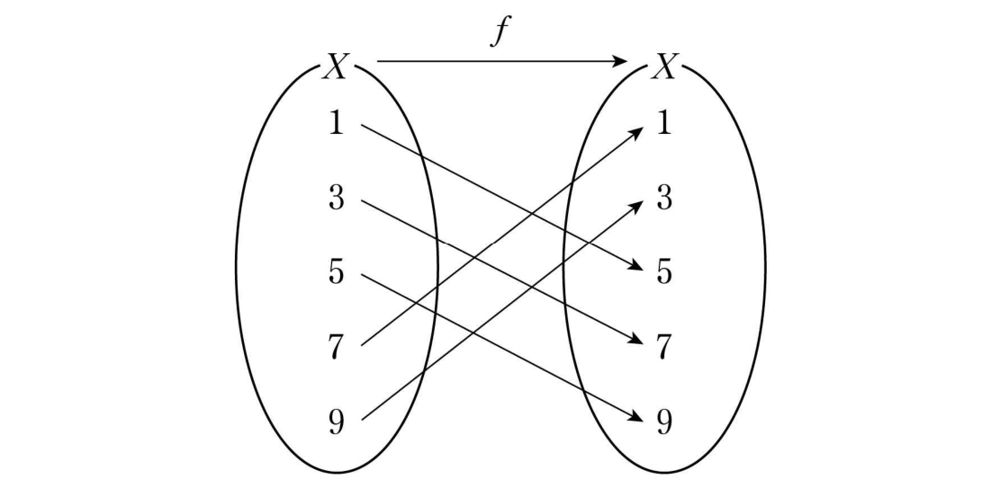
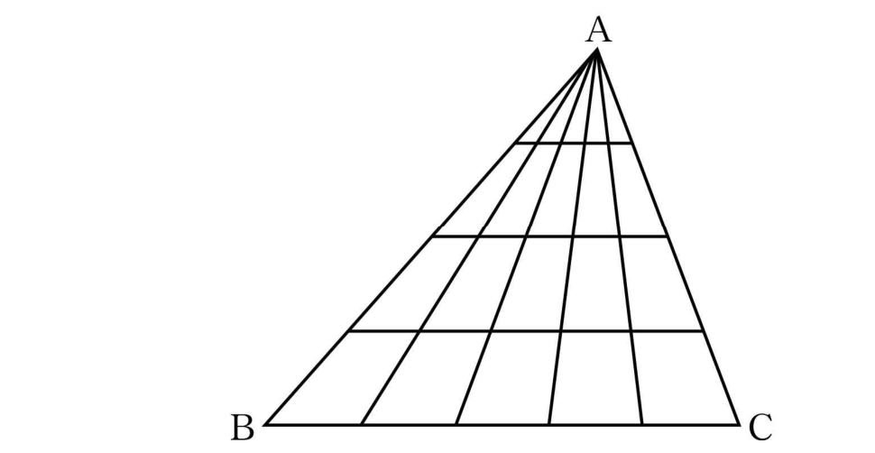
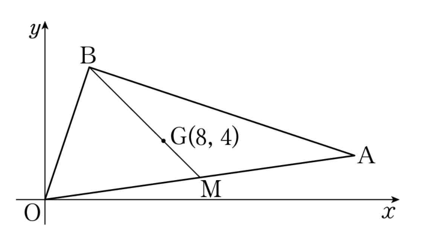

3. 2020년 3월 3번 · 2점 · 고1 범위 · 여러 가지 방정식과 부등식 · G2H-02#7
원본 (내부용)부등식 $| x-2 | <3$을 만족시키는 정수 $x$의 개수는? [2점]
① $1$② $3$③ $5$④ $7$⑤ $9$
원본 정답 ③
원본 풀이 (내부용)[출제의도] 절댓값 기호를 포함한 일차부등식을 계산한다.
\(
|x-2|<3
\)
에서
\(
-3<x-2<3
\)
각 변에 2를 더하면
\(
-1<x<5
\)
따라서 조건을 만족시키는 정수 \(x\)는 \(0,1,2,3,4\)이고, 그 개수는 5이다.
[다른 풀이]
\(
|x-2|<3
\)
\(
-3<x-2<3
\)
\(
-3<x-2\text{에서 }x>-1\quad\cdots\text{㉠}
\)
\(
x-2<3\text{에서 }x<5\quad\cdots\text{㉡}
\)
㉠, ㉡을 모두 만족시키는 \(x\)의 값의 범위는
\(
-1<x<5
\)
이다. 따라서 조건을 만족시키는 정수 \(x\)는 \(0,1,2,3,4\)이고, 그 개수는 5이다.
그림: 수직선에서 \(-1\)과 \(5\) 사이를 나타내며, 두 끝점은 열린 점이다.
생성기 숫자판 1/6 · G2H-02#7부등식 $\left|x-1\right|<4$를 만족시키는 정수 $x$의 개수로 옳은 것을 고르세요.
① $3$② $4$③ $5$④ $6$⑤ $7$
정답⑤ $7$ $-4<x-1<4$이므로 $-3<x<5$ 정수 $x$는 $-2$부터 $4$까지이므로 개수는 $7$
숫자: 원본 2 3 → 쌍둥이 1 4
생성기 숫자판 2/6 · G2H-02#7부등식 $\left|x-4\right|<8$을 만족시키는 정수 $x$의 개수로 옳은 것을 고르세요.
① $12$② $13$③ $14$④ $15$⑤ $16$
정답④ $15$ $-8<x-4<8$이므로 $-4<x<12$ 정수 $x$는 $-3$부터 $11$까지이므로 개수는 $15$
숫자: 원본 2 3 → 쌍둥이 4 8
생성기 숫자판 3/6 · G2H-02#7부등식 $\left|x-3\right|<6$을 만족시키는 정수 $x$의 개수로 옳은 것을 고르세요.
① $11$② $12$③ $13$④ $14$⑤ $15$
정답① $11$ $-6<x-3<6$이므로 $-3<x<9$ 정수 $x$는 $-2$부터 $8$까지이므로 개수는 $11$
숫자: 원본 2 3 → 쌍둥이 3 6 · 같은 수: 3
생성기 숫자판 4/6 · G2H-02#7부등식 $\left|x-4\right|<9$를 만족시키는 정수 $x$의 개수로 옳은 것을 고르세요.
① $16$② $17$③ $18$④ $19$⑤ $21$
정답② $17$ $-9<x-4<9$이므로 $-5<x<13$ 정수 $x$는 $-4$부터 $12$까지이므로 개수는 $17$
숫자: 원본 2 3 → 쌍둥이 4 9
생성기 숫자판 5/6 · G2H-02#7부등식 $\left|x-1\right|<9$를 만족시키는 정수 $x$의 개수로 옳은 것을 고르세요.
① $17$② $18$③ $19$④ $20$⑤ $21$
정답① $17$ $-9<x-1<9$이므로 $-8<x<10$ 정수 $x$는 $-7$부터 $9$까지이므로 개수는 $17$
숫자: 원본 2 3 → 쌍둥이 1 9
생성기 숫자판 6/6 · G2H-02#7부등식 $\left|x-1\right|<6$을 만족시키는 정수 $x$의 개수로 옳은 것을 고르세요.
① $9$② $10$③ $11$④ $12$⑤ $13$
정답③ $11$ $-6<x-1<6$이므로 $-5<x<7$ 정수 $x$는 $-4$부터 $6$까지이므로 개수는 $11$
숫자: 원본 2 3 → 쌍둥이 1 6
4. 2020년 3월 4번 · 3점 · 고1 범위 · 직선의 방정식 · G2H-05#1
원본 (내부용)두 직선 $y=-2x+3$, $y=ax+1$이 서로 수직일 때, 상수 $a$의 값은? [3점]
① $- \frac{1}{2}$② $- \frac{1}{3}$③ $\frac{1}{3}$④ $\frac{1}{2}$⑤ $\frac{2}{3}$
원본 정답 ④
원본 풀이 (내부용)[출제의도] 두 직선의 수직 조건을 이해하여 직선의 기울기를 구한다.
직선 \(y=-2x+3\)의 기울기는 \(-2\)이고 직선 \(y=ax+1\)의 기울기는 \(a\)이다. 두 직선이 서로 수직이면 두 직선의 기울기의 곱은 \(-1\)이어야 한다.
\(
(-2)\times a=-1
\)
따라서
\(
a=\frac12
\)
생성기 숫자판 1/6 · G2H-05#1두 직선 $y=1/2x+5$, $y=ax+1$이 서로 수직일 때, 상수 $a$의 값으로 옳은 것을 고르세요.
① $-4$② $-3$③ $-2$④ $-\frac{1}{2}$⑤ $2$
정답③ $-2$ 두 직선이 서로 수직이려면 기울기의 곱이 $-1$이어야 하므로 $1/2a=-1$ 따라서 $a=-2$
숫자: 원본 2 3 1 → 쌍둥이 1 2 5 1 · 같은 수: 1 2
생성기 숫자판 2/6 · G2H-05#1두 직선 $y=-4x+3$, $y=ax+1$이 서로 수직일 때, 상수 $a$의 값으로 옳은 것을 고르세요.
① $-\frac{1}{4}$② $\frac{1}{4}$③ $\frac{1}{2}$④ $\frac{5}{4}$⑤ $4$
정답② $\frac{1}{4}$ 두 직선이 서로 수직이려면 기울기의 곱이 $-1$이어야 하므로 $-4a=-1$ 따라서 $a=\frac{1}{4}$
숫자: 원본 2 3 1 → 쌍둥이 4 3 1 · 같은 수: 1 3
생성기 숫자판 3/6 · G2H-05#1두 직선 $y=1/2x-3$, $y=ax+1$이 서로 수직일 때, 상수 $a$의 값으로 옳은 것을 고르세요.
① $-5$② $-4$③ $-3$④ $-2$⑤ $2$
정답④ $-2$ 두 직선이 서로 수직이려면 기울기의 곱이 $-1$이어야 하므로 $1/2a=-1$ 따라서 $a=-2$
숫자: 원본 2 3 1 → 쌍둥이 1 2 3 1 · 같은 수: 1 2 3
생성기 숫자판 4/6 · G2H-05#1두 직선 $y=-3x+2$, $y=ax+1$이 서로 수직일 때, 상수 $a$의 값으로 옳은 것을 고르세요.
① $-\frac{1}{3}$② $\frac{1}{3}$③ $\frac{2}{3}$④ $\frac{4}{3}$⑤ $3$
정답② $\frac{1}{3}$ 두 직선이 서로 수직이려면 기울기의 곱이 $-1$이어야 하므로 $-3a=-1$ 따라서 $a=\frac{1}{3}$
숫자: 원본 2 3 1 → 쌍둥이 3 2 1 · 같은 수: 1 2 3
생성기 숫자판 5/6 · G2H-05#1두 직선 $y=1/2x+4$, $y=ax+1$이 서로 수직일 때, 상수 $a$의 값으로 옳은 것을 고르세요.
① $-2$② $-1$③ $-\frac{1}{2}$④ $\frac{1}{2}$⑤ $2$
정답① $-2$ 두 직선이 서로 수직이려면 기울기의 곱이 $-1$이어야 하므로 $1/2a=-1$ 따라서 $a=-2$
숫자: 원본 2 3 1 → 쌍둥이 1 2 4 1 · 같은 수: 1 2
생성기 숫자판 6/6 · G2H-05#1두 직선 $y=-2x+4$, $y=ax+1$이 서로 수직일 때, 상수 $a$의 값으로 옳은 것을 고르세요.
① $-\frac{1}{2}$② $\frac{1}{2}$③ $1$④ $\frac{3}{2}$⑤ $2$
정답② $\frac{1}{2}$ 두 직선이 서로 수직이려면 기울기의 곱이 $-1$이어야 하므로 $-2a=-1$ 따라서 $a=\frac{1}{2}$
숫자: 원본 2 3 1 → 쌍둥이 2 4 1 · 같은 수: 1 2
5. 2020년 3월 5번 · 3점 · 고1 범위 · 함수 · G2f-16#0
원본 (내부용)그림은 함수 $f:X \to X$를 나타낸 것이다. $f(5)+ ( f \circ f ) (9)$의 값은? [3점]

① $18$② $16$③ $14$④ $12$⑤ $10$
원본 정답 ②
원본 풀이 (내부용)[출제의도] 합성함수를 이해하여 함수값을 구한다.
그림의 대응 관계에서 \(f(5)=9\)이다.
도형 설명: 집합 \(X=\{1,3,5,7,9\}\)에서 집합 \(X\)로 가는 함수 \(f\)의 대응을 두 타원으로 나타냈다. 화살표로 각 원소의 대응을 표시한다.
생성기 숫자판 1/6 · G2f-16#0그림은 함수 $f:X\to X$를 나타낸 것입니다. $f\left(10\right)+\left(f\circ f\right)\left(10\right)$의 값으로 옳은 것을 고르세요.
① $1$② $3$③ $5$④ $7$⑤ $9$
정답⑤ $9$ 그림에서 $f\left(10\right)=8$ $\left(f\circ f\right)\left(10\right)=f\left(f\left(10\right)\right)=f\left(8\right)=1$ 따라서 $f\left(10\right)+\left(f\circ f\right)\left(10\right)=8+1=9$
숫자: 원본 5 9 → 쌍둥이 10 10
생성기 숫자판 2/6 · G2f-16#0그림은 함수 $f:X\to X$를 나타낸 것입니다. $f\left(3\right)+\left(f\circ f\right)\left(1\right)$의 값으로 옳은 것을 고르세요.
① $4$② $5$③ $6$④ $7$⑤ $8$
정답⑤ $8$ 그림에서 $f\left(3\right)=4$ $\left(f\circ f\right)\left(1\right)=f\left(f\left(1\right)\right)=f\left(4\right)=4$ 따라서 $f\left(3\right)+\left(f\circ f\right)\left(1\right)=4+4=8$
숫자: 원본 5 9 → 쌍둥이 3 1
생성기 숫자판 3/6 · G2f-16#0그림은 함수 $f:X\to X$를 나타낸 것입니다. $f\left(10\right)+\left(f\circ f\right)\left(6\right)$의 값으로 옳은 것을 고르세요.
① $16$② $18$③ $20$④ $22$⑤ $24$
정답⑤ $24$ 그림에서 $f\left(10\right)=12$ $\left(f\circ f\right)\left(6\right)=f\left(f\left(6\right)\right)=f\left(10\right)=12$ 따라서 $f\left(10\right)+\left(f\circ f\right)\left(6\right)=12+12=24$
숫자: 원본 5 9 → 쌍둥이 10 6
생성기 숫자판 4/6 · G2f-16#0그림은 함수 $f:X\to X$를 나타낸 것입니다. $f\left(12\right)+\left(f\circ f\right)\left(12\right)$의 값으로 옳은 것을 고르세요.
① $18$② $20$③ $22$④ $24$⑤ $26$
정답④ $24$ 그림에서 $f\left(12\right)=12$ $\left(f\circ f\right)\left(12\right)=f\left(f\left(12\right)\right)=f\left(12\right)=12$ 따라서 $f\left(12\right)+\left(f\circ f\right)\left(12\right)=12+12=24$
숫자: 원본 5 9 → 쌍둥이 12 12
생성기 숫자판 5/6 · G2f-16#0그림은 함수 $f:X\to X$를 나타낸 것입니다. $f\left(11\right)+\left(f\circ f\right)\left(3\right)$의 값으로 옳은 것을 고르세요.
① $3$② $4$③ $5$④ $6$⑤ $7$
정답② $4$ 그림에서 $f\left(11\right)=2$ $\left(f\circ f\right)\left(3\right)=f\left(f\left(3\right)\right)=f\left(11\right)=2$ 따라서 $f\left(11\right)+\left(f\circ f\right)\left(3\right)=2+2=4$
숫자: 원본 5 9 → 쌍둥이 11 3
생성기 숫자판 6/6 · G2f-16#0그림은 함수 $f:X\to X$를 나타낸 것입니다. $f\left(8\right)+\left(f\circ f\right)\left(1\right)$의 값으로 옳은 것을 고르세요.
① $3$② $4$③ $5$④ $6$⑤ $7$
정답④ $6$ 그림에서 $f\left(8\right)=3$ $\left(f\circ f\right)\left(1\right)=f\left(f\left(1\right)\right)=f\left(10\right)=3$ 따라서 $f\left(8\right)+\left(f\circ f\right)\left(1\right)=3+3=6$
숫자: 원본 5 9 → 쌍둥이 8 1
6. 2020년 3월 6번 · 3점 · 고1 범위 · 항등식과 나머지정리·인수분해 · G2H-01#1
원본 (내부용)다항식 $x^{2} +3x+6$을 $x+2$로 나눈 나머지는? [3점]
① $2$② $4$③ $6$④ $8$⑤ $10$
원본 정답 ②
원본 풀이 (내부용)[출제의도] 나머지정리를 이해하여 나머지를 구한다.
\(P(x)=x^2+3x+6\)이라 하자. 다항식 \(P(x)\)를 \(x+2\)로 나눈 나머지는
\(
P(-2)=(-2)^2+3\times(-2)+6=4
\)
생성기 숫자판 1/6 · G2H-01#1다항식 $2x^{3}-x^{2}+x+5$를 $x+2$로 나눈 나머지로 옳은 것을 고르세요.
① $-20$② $-19$③ $-18$④ $-17$⑤ $-16$
정답④ $-17$ 나머지정리에 의하여 $x=-2$를 대입한 값이 나머지입니다. $2\times \left(-2\right)^{3}-\left(-2\right)^{2}+\left(-2\right)+5$ $=-17$
숫자: 원본 3 6 2 → 쌍둥이 2 5 2 · 같은 수: 2
생성기 숫자판 2/6 · G2H-01#1다항식 $x^{3}+8x^{2}+3x-5$를 $x-2$로 나눈 나머지로 옳은 것을 고르세요.
① $38$② $39$③ $40$④ $41$⑤ $42$
정답④ $41$ 나머지정리에 의하여 $x=2$를 대입한 값이 나머지입니다. $2^{3}+8\times 2^{2}+3\times 2-5$ $=41$
숫자: 원본 3 6 2 → 쌍둥이 8 3 5 2 · 같은 수: 2 3
생성기 숫자판 3/6 · G2H-01#1다항식 $4x^{2}+4x-3$을 $x-5$로 나눈 나머지로 옳은 것을 고르세요.
① $113$② $114$③ $115$④ $116$⑤ $117$
정답⑤ $117$ 나머지정리에 의하여 $x=5$를 대입한 값이 나머지입니다. $4\times 5^{2}+4\times 5-3$ $=117$
숫자: 원본 3 6 2 → 쌍둥이 4 4 3 5 · 같은 수: 3
생성기 숫자판 4/6 · G2H-01#1다항식 $4x^{2}-x+7$을 $x-2$로 나눈 나머지로 옳은 것을 고르세요.
① $21$② $22$③ $23$④ $24$⑤ $25$
정답① $21$ 나머지정리에 의하여 $x=2$를 대입한 값이 나머지입니다. $4\times 2^{2}-2+7$ $=21$
숫자: 원본 3 6 2 → 쌍둥이 4 7 2 · 같은 수: 2
생성기 숫자판 5/6 · G2H-01#1다항식 $2x^{3}+5x^{2}+3x+1$을 $x+1$로 나눈 나머지로 옳은 것을 고르세요.
① $1$② $2$③ $3$④ $4$⑤ $5$
정답① $1$ 나머지정리에 의하여 $x=-1$을 대입한 값이 나머지입니다. $2\times \left(-1\right)^{3}+5\times \left(-1\right)^{2}+3\times \left(-1\right)+1$ $=1$
숫자: 원본 3 6 2 → 쌍둥이 2 5 3 1 1 · 같은 수: 2 3
생성기 숫자판 6/6 · G2H-01#1다항식 $3x^{3}+x^{2}+7x-5$를 $x-2$로 나눈 나머지로 옳은 것을 고르세요.
① $37$② $38$③ $39$④ $40$⑤ $41$
정답① $37$ 나머지정리에 의하여 $x=2$를 대입한 값이 나머지입니다. $3\times 2^{3}+2^{2}+7\times 2-5$ $=37$
숫자: 원본 3 6 2 → 쌍둥이 3 7 5 2 · 같은 수: 2 3
7. 2020년 3월 7번 · 3점 · 고1 범위 · 평면좌표 · G2H-05b#3
원본 (내부용)좌표평면 위에 두 점 ${\mathrm{A}} ( 0,a )$, $\mathrm{B} ( 6,0 )$이 있다. 선분 $\mathrm{AB}$를 $1:2$로 내분하는 점이 직선 $y=-x$ 위에 있을 때, $a$의 값은? [3점]
① $-1$② $-2$③ $-3$④ $-4$⑤ $-5$
원본 정답 ③
원본 풀이 (내부용)[출제의도] 선분의 내분을 이해하여 점의 좌표를 구한다.
선분 \(AB\)를 \(1:2\)로 내분하는 점의 좌표는
\(
\left(\frac{6}{1+2},\frac{2a}{1+2}\right),
\quad\text{즉}\quad
\left(2,\frac{2a}{3}\right)
\)
이 점이 직선 \(y=-x\) 위의 점이므로
\(
\frac{2a}{3}=-2,\quad a=(-2)\times\frac32=-3
\)
생성기 숫자판 1/5 · G2H-05b#3좌표평면 위에 두 점 $\mathrm{A}\left(0,\ a\right)$, $\mathrm{B}\left(2,\ 0\right)$이 있습니다. 선분 $\mathrm{AB}$를 $2:1$로 내분하는 점이 직선 $y=x$ 위에 있을 때, $a$의 값으로 옳은 것을 고르세요.
① $0$② $1$③ $2$④ $3$⑤ $4$
정답⑤ $4$ 내분점은 $\left(\frac{2\times 2+1\times 0}{3},\ \frac{2\times 0+1\times a}{3}\right)=\left(\frac{4}{3},\ \frac{a}{3}\right)$ 이 점이 직선 $y=x$ 위에 있으므로 $\frac{a}{3}=\frac{4}{3}$ 따라서 $a=4$
숫자: 원본 0 6 0 1 2 → 쌍둥이 0 2 0 2 1 · 같은 수: 0 1 2
생성기 숫자판 2/5 · G2H-05b#3좌표평면 위에 두 점 $\mathrm{A}\left(0,\ a\right)$, $\mathrm{B}\left(8,\ 0\right)$이 있습니다. 선분 $\mathrm{AB}$를 $3:1$로 내분하는 점이 직선 $y=x$ 위에 있을 때, $a$의 값으로 옳은 것을 고르세요.
① $24$② $25$③ $26$④ $27$⑤ $28$
정답① $24$ 내분점은 $\left(\frac{3\times 8+1\times 0}{4},\ \frac{3\times 0+1\times a}{4}\right)=\left(6,\ \frac{a}{4}\right)$ 이 점이 직선 $y=x$ 위에 있으므로 $\frac{a}{4}=6$ 따라서 $a=24$
숫자: 원본 0 6 0 1 2 → 쌍둥이 0 8 0 3 1 · 같은 수: 0 1
생성기 숫자판 3/5 · G2H-05b#3좌표평면 위에 두 점 $\mathrm{A}\left(0,\ a\right)$, $\mathrm{B}\left(8,\ 0\right)$이 있습니다. 선분 $\mathrm{AB}$를 $2:1$로 내분하는 점이 직선 $y=-x$ 위에 있을 때, $a$의 값으로 옳은 것을 고르세요.
① $-16$② $-15$③ $-14$④ $-13$⑤ $-12$
정답① $-16$ 내분점은 $\left(\frac{2\times 8+1\times 0}{3},\ \frac{2\times 0+1\times a}{3}\right)=\left(\frac{16}{3},\ \frac{a}{3}\right)$ 이 점이 직선 $y=-x$ 위에 있으므로 $\frac{a}{3}=-\frac{16}{3}$ 따라서 $a=-16$
숫자: 원본 0 6 0 1 2 → 쌍둥이 0 8 0 2 1 · 같은 수: 0 1 2
생성기 숫자판 4/5 · G2H-05b#3좌표평면 위에 두 점 $\mathrm{A}\left(0,\ a\right)$, $\mathrm{B}\left(4,\ 0\right)$이 있습니다. 선분 $\mathrm{AB}$를 $3:1$로 내분하는 점이 직선 $y=-x$ 위에 있을 때, $a$의 값으로 옳은 것을 고르세요.
① $-12$② $-11$③ $-10$④ $-9$⑤ $-8$
정답① $-12$ 내분점은 $\left(\frac{3\times 4+1\times 0}{4},\ \frac{3\times 0+1\times a}{4}\right)=\left(3,\ \frac{a}{4}\right)$ 이 점이 직선 $y=-x$ 위에 있으므로 $\frac{a}{4}=-3$ 따라서 $a=-12$
숫자: 원본 0 6 0 1 2 → 쌍둥이 0 4 0 3 1 · 같은 수: 0 1
생성기 숫자판 5/5 · G2H-05b#3좌표평면 위에 두 점 $\mathrm{A}\left(0,\ a\right)$, $\mathrm{B}\left(6,\ 0\right)$이 있습니다. 선분 $\mathrm{AB}$를 $3:1$로 내분하는 점이 직선 $y=-x$ 위에 있을 때, $a$의 값으로 옳은 것을 고르세요.
① $-18$② $-17$③ $-16$④ $-15$⑤ $-14$
정답① $-18$ 내분점은 $\left(\frac{3\times 6+1\times 0}{4},\ \frac{3\times 0+1\times a}{4}\right)=\left(\frac{9}{2},\ \frac{a}{4}\right)$ 이 점이 직선 $y=-x$ 위에 있으므로 $\frac{a}{4}=-\frac{9}{2}$ 따라서 $a=-18$
숫자: 원본 0 6 0 1 2 → 쌍둥이 0 6 0 3 1 · 같은 수: 0 1 6
8. 2020년 3월 8번 · 3점 · 고1 범위 · 이차방정식과 이차함수 · G2H-02b#6
원본 (내부용)곡선 $y=2x^{2} -5x+a$와 직선 $y=x+12$가 서로 다른 두 점에서 만나고 두 교점의 $x$좌표의 곱이 $-4$일 때, 상수 $a$의 값은? [3점]
① $3$② $4$③ $5$④ $6$⑤ $7$
원본 정답 ②
원본 풀이 (내부용)[출제의도] 이차방정식과 이차함수의 관계를 이해하여 상수의 값을 구한다.
곡선 \(y=2x^2-5x+a\)와 직선 \(y=x+12\)가 만나는 두 점의 \(x\)좌표를 각각 \(\alpha,\beta\)라 하자.
두 식 \(y=2x^2-5x+a,\ y=x+12\)를 연립하면
\(
2x^2-6x+a-12=0\quad\cdots\text{㉠}
\)
이 이차방정식의 두 근이 \(\alpha,\beta\)이므로 근과 계수의 관계에서
\(
\alpha\beta=\frac{a-12}{2}
\)
이때 조건에서 \(\alpha\beta=-4\)이므로
\(
\frac{a-12}{2}=-4,\quad a=4
\)
[보충 설명]
\(a=4\)를 ㉠에 대입하여 정리하면
\(
x^2-3x-4=0,\quad (x+4)(x-1)=0
\)
따라서 곡선 \(y=2x^2-5x+a\)와 직선 \(y=x+12\)는 서로 다른 두 점에서 만나고 두 점의 \(x\)좌표는 각각 \(-4,1\)이다.
생성기 숫자판 1/5 · G2H-02b#6곡선 $y=x^{2}-3x+a$와 직선 $y=x+6$이 서로 다른 두 점에서 만나고 두 교점의 $x$좌표의 곱이 $-5$일 때, 상수 $a$의 값으로 옳은 것을 고르세요.
① $-3$② $-2$③ $-1$④ $0$⑤ $1$
정답⑤ $1$ $x^{2}-3x+a=x+6$에서 $x^{2}-4x+a-6=0$ 근과 계수의 관계에 의하여 $a-6=-5$ 따라서 $a=1$
숫자: 원본 2 5 12 4 → 쌍둥이 3 6 5 · 같은 수: 5
생성기 숫자판 2/5 · G2H-02b#6곡선 $y=3x^{2}+4x+a$와 직선 $y=x+10$이 서로 다른 두 점에서 만나고 두 교점의 $x$좌표의 곱이 $-4$일 때, 상수 $a$의 값으로 옳은 것을 고르세요.
① $-4$② $-3$③ $-2$④ $-1$⑤ $0$
정답③ $-2$ $3x^{2}+4x+a=x+10$에서 $3x^{2}+3x+a-10=0$ 두 교점의 $x$좌표는 이 방정식의 두 근이므로 근과 계수의 관계에 의하여 $\frac{a-10}{3}=-4$ 따라서 $a=-2$
숫자: 원본 2 5 12 4 → 쌍둥이 3 4 10 4 · 같은 수: 4
생성기 숫자판 3/5 · G2H-02b#6곡선 $y=2x^{2}-2x+a$와 직선 $y=x+7$이 서로 다른 두 점에서 만나고 두 교점의 $x$좌표의 곱이 $-1$일 때, 상수 $a$의 값으로 옳은 것을 고르세요.
① $1$② $2$③ $3$④ $4$⑤ $5$
정답⑤ $5$ $2x^{2}-2x+a=x+7$에서 $2x^{2}-3x+a-7=0$ 두 교점의 $x$좌표는 이 방정식의 두 근이므로 근과 계수의 관계에 의하여 $\frac{a-7}{2}=-1$ 따라서 $a=5$
숫자: 원본 2 5 12 4 → 쌍둥이 2 2 7 1 · 같은 수: 2
생성기 숫자판 4/5 · G2H-02b#6곡선 $y=3x^{2}-4x+a$와 직선 $y=x+10$이 서로 다른 두 점에서 만나고 두 교점의 $x$좌표의 곱이 $-4$일 때, 상수 $a$의 값으로 옳은 것을 고르세요.
① $-5$② $-4$③ $-3$④ $-2$⑤ $-1$
정답④ $-2$ $3x^{2}-4x+a=x+10$에서 $3x^{2}-5x+a-10=0$ 두 교점의 $x$좌표는 이 방정식의 두 근이므로 근과 계수의 관계에 의하여 $\frac{a-10}{3}=-4$ 따라서 $a=-2$
숫자: 원본 2 5 12 4 → 쌍둥이 3 4 10 4 · 같은 수: 4
생성기 숫자판 5/5 · G2H-02b#6곡선 $y=x^{2}-5x+a$와 직선 $y=2x+5$가 서로 다른 두 점에서 만나고 두 교점의 $x$좌표의 곱이 $-2$일 때, 상수 $a$의 값으로 옳은 것을 고르세요.
① $3$② $4$③ $5$④ $6$⑤ $7$
정답① $3$ $x^{2}-5x+a=2x+5$에서 $x^{2}-7x+a-5=0$ 근과 계수의 관계에 의하여 $a-5=-2$ 따라서 $a=3$
숫자: 원본 2 5 12 4 → 쌍둥이 5 2 5 2 · 같은 수: 2 5
9. 2020년 3월 9번 · 3점 · 고1 범위 · 집합 · G2H-03b#11
원본 (내부용)집합 $A= \{ 1,2,3,4 \}$에 대하여 집합 $B$가 $B-A= \{ 5,6 \}$ 을 만족시킨다. 집합 $B$의 모든 원소의 합이 $12$일 때, 집합 $A-B$의 모든 원소의 합은? [3점]
① $5$② $6$③ $7$④ $8$⑤ $9$
원본 정답 ⑤
원본 풀이 (내부용)[출제의도] 집합의 연산을 이해하여 차집합의 원소의 합을 구한다.
\(B-A=\{5,6\}\)에서 집합 \(B-A\)의 모든 원소의 합은 11이다.
\(
B=(B-A)\cup(A\cap B),\quad (B-A)\cap(A\cap B)=\varnothing
\)
이고, 집합 \(B\)의 모든 원소의 합이 12이려면
\(
A\cap B=\{1\}
\)
따라서
\(
A-B=A-(A\cap B)=\{2,3,4\}
\)
이므로 집합 \(A-B\)의 모든 원소의 합은
\(
2+3+4=9
\)
[다른 풀이]
\(
A\cup B=A\cup(B-A)=\{1,2,3,4,5,6\}
\)
이므로 집합 \(A\cup B\)의 모든 원소의 합은
\(
1+2+3+4+5+6=21
\)
또
\(
A-B=(A\cup B)-B,\quad (A\cup B)\cap B=B
\)
이고, 집합 \(B\)의 모든 원소의 합이 12이므로 집합 \(A-B\)의 모든 원소의 합은
\(
21-12=9
\)
그림: 벤다이어그램에서 \(A\)에만 있는 원소는 \(2,3,4\), 교집합 원소는 \(1\), \(B\)에만 있는 원소는 \(5,6\)이다.
생성기 숫자판 1/5 · G2H-03b#11집합 $A=\left\{1,\ 2,\ 3\right\}$에 대하여 집합 $B$가 $B-A=\left\{4,\ 7\right\}$를 만족시킵니다. 집합 $B$의 모든 원소의 합이 $13$일 때, 집합 $A-B$의 모든 원소의 합으로 옳은 것을 고르세요.
① $2$② $3$③ $4$④ $5$⑤ $6$
정답③ $4$ $B=\left(B-A\right)\cup\left(A\cap B\right)$이므로 $A\cap B$의 원소의 합은 $13-\left(4+7\right)=2$ $A\cap B\subset A$이므로 $A\cap B=\left\{2\right\}$ $A-B$의 원소의 합은 $6-2=4$
생성기 숫자판 2/5 · G2H-03b#11집합 $A=\left\{1,\ 2,\ 3,\ 4\right\}$에 대하여 집합 $B$가 $B-A=\left\{5,\ 6\right\}$를 만족시킵니다. 집합 $B$의 모든 원소의 합이 $13$일 때, 집합 $A-B$의 모든 원소의 합으로 옳은 것을 고르세요.
① $8$② $9$③ $10$④ $11$⑤ $12$
정답① $8$ $B=\left(B-A\right)\cup\left(A\cap B\right)$이므로 $A\cap B$의 원소의 합은 $13-\left(5+6\right)=2$ $A\cap B\subset A$이므로 $A\cap B=\left\{2\right\}$ $A-B$의 원소의 합은 $10-2=8$
생성기 숫자판 3/5 · G2H-03b#11집합 $A=\left\{1,\ 2,\ 3,\ 4\right\}$에 대하여 집합 $B$가 $B-A=\left\{6,\ 8\right\}$를 만족시킵니다. 집합 $B$의 모든 원소의 합이 $15$일 때, 집합 $A-B$의 모든 원소의 합으로 옳은 것을 고르세요.
① $6$② $7$③ $8$④ $9$⑤ $10$
정답④ $9$ $B=\left(B-A\right)\cup\left(A\cap B\right)$이므로 $A\cap B$의 원소의 합은 $15-\left(6+8\right)=1$ $A\cap B\subset A$이므로 $A\cap B=\left\{1\right\}$ $A-B$의 원소의 합은 $10-1=9$
생성기 숫자판 4/5 · G2H-03b#11집합 $A=\left\{1,\ 2,\ 3,\ 4,\ 5\right\}$에 대하여 집합 $B$가 $B-A=\left\{7,\ 8\right\}$를 만족시킵니다. 집합 $B$의 모든 원소의 합이 $16$일 때, 집합 $A-B$의 모든 원소의 합으로 옳은 것을 고르세요.
① $11$② $12$③ $13$④ $14$⑤ $15$
정답④ $14$ $B=\left(B-A\right)\cup\left(A\cap B\right)$이므로 $A\cap B$의 원소의 합은 $16-\left(7+8\right)=1$ $A\cap B\subset A$이므로 $A\cap B=\left\{1\right\}$ $A-B$의 원소의 합은 $15-1=14$
생성기 숫자판 5/5 · G2H-03b#11집합 $A=\left\{1,\ 2,\ 3\right\}$에 대하여 집합 $B$가 $B-A=\left\{5,\ 8\right\}$를 만족시킵니다. 집합 $B$의 모든 원소의 합이 $14$일 때, 집합 $A-B$의 모든 원소의 합으로 옳은 것을 고르세요.
① $1$② $2$③ $3$④ $4$⑤ $5$
정답⑤ $5$ $B=\left(B-A\right)\cup\left(A\cap B\right)$이므로 $A\cap B$의 원소의 합은 $14-\left(5+8\right)=1$ $A\cap B\subset A$이므로 $A\cap B=\left\{1\right\}$ $A-B$의 원소의 합은 $6-1=5$
10. 2020년 3월 10번 · 3점 · 고1 범위 · 항등식과 나머지정리·인수분해 · G2M8-06#3
원본 (내부용)다항식 $P(x)$가 모든 실수 $x$에 대하여 등식 $x ( x+1 ) ( x+2 )$$= ( x+1 ) ( x-1 ) P(x)+ax+b$ 를 만족시킬 때, $P(a-b)$의 값은? (단, $a$, $b$는 상수이다.) [3점]
① $1$② $2$③ $3$④ $4$⑤ $5$
원본 정답 ③
원본 풀이 (내부용)[출제의도] 항등식의 성질을 이해하여 값을 구한다.
등식
\(
x(x+1)(x+2)=(x+1)(x-1)P(x)+ax+b
\)
의 양변에 \(x=-1\)을 대입하면
\(
(-1)\times0\times1=0\times(-2)P(-1)+a\times(-1)+b
\)
\(
0=-a+b\quad\cdots\text{㉠}
\)
등식의 양변에 \(x=1\)을 대입하면
\(
1\times2\times3=2\times0\times P(1)+a\times1+b
\)
\(
6=a+b\quad\cdots\text{㉡}
\)
㉠, ㉡을 연립하여 풀면
\(
a=3,\quad b=3
\)
따라서 주어진 등식은
\(
x(x+1)(x+2)=(x+1)(x-1)P(x)+3x+3
\)
이다. 양변에 \(x=0\)을 대입하면
\(
0\times1\times2=1\times(-1)P(0)+3\times0+3
\)
\(
P(0)=3
\)
따라서
\(
P(a-b)=P(0)=3
\)
[다른 풀이]
등식
\(
x(x+1)(x+2)=(x+1)(x-1)P(x)+ax+b
\)
의 좌변이
\(
x(x+1)(x+2)=(x^2+x)(x+2)=x^3+3x^2+2x
\)
이므로 다항식 \(x^3+3x^2+2x\)를 \(x^2-1\)로 나눈 몫이 \(P(x)\)이고 나머지가 \(ax+b\)이다. 나눗셈에서 \(P(x)=x+3,\ a=3,\ b=3\)이다. 이때 \(a-b=0\)이므로
\(
P(0)=0+3=3
\)
따라서
\(
P(a-b)=P(0)=3
\)
생성기 숫자판 1/6 · G2M8-06#3다항식 $P\left(x\right)$가 모든 실수 $x$에 대하여 등식 $\left(x-6\right)\left(x-6\right)\left(x+3\right)=\left(x-7\right)\left(x+3\right)P\left(x\right)+ax+b$를 만족시킬 때, $P\left(a-b\right)$의 값으로 옳은 것을 고르세요. (단, $a$, $b$는 상수입니다.)
① $-8$② $-7$③ $-6$④ $-5$⑤ $-4$
정답② $-7$ $x=7$을 대입하면 $10=7a+b$ $x=-3$을 대입하면 $0=-3a+b$ 두 식에서 $a=1$, $b=3$ $\left(x-6\right)\left(x-6\right)\left(x+3\right)-\left(x+3\right)=x^{3}-9x^{2}-x+105$ $=\left(x-7\right)\left(x+3\right)\left(x-5\right)$이므로 $P\left(x\right)=x-5$ 따라서 $P\left(a-b\right)=P\left(-2\right)=-7$
숫자: 원본 1 2 1 1 → 쌍둥이 6 6 3 7 3
생성기 숫자판 2/6 · G2M8-06#3다항식 $P\left(x\right)$가 모든 실수 $x$에 대하여 등식 $\left(x+5\right)\left(x-4\right)\left(x+4\right)=\left(x+7\right)\left(x-5\right)P\left(x\right)+ax+b$를 만족시킬 때, $P\left(a-b\right)$의 값으로 옳은 것을 고르세요. (단, $a$, $b$는 상수입니다.)
① $-12$② $-11$③ $-10$④ $-9$⑤ $-8$
정답④ $-9$ $x=-7$을 대입하면 $-66=-7a+b$ $x=5$를 대입하면 $90=5a+b$ 두 식에서 $a=13$, $b=25$ $\left(x+5\right)\left(x-4\right)\left(x+4\right)-\left(13x+25\right)=x^{3}+5x^{2}-29x-105$ $=\left(x+7\right)\left(x-5\right)\left(x+3\right)$이므로 $P\left(x\right)=x+3$ 따라서 $P\left(a-b\right)=P\left(-12\right)=-9$
숫자: 원본 1 2 1 1 → 쌍둥이 5 4 4 7 5
생성기 숫자판 3/6 · G2M8-06#3다항식 $P\left(x\right)$가 모든 실수 $x$에 대하여 등식 $\left(x-4\right)\left(x+7\right)\left(x-4\right)=\left(x+7\right)\left(x-5\right)P\left(x\right)+ax+b$를 만족시킬 때, $P\left(a-b\right)$의 값으로 옳은 것을 고르세요. (단, $a$, $b$는 상수입니다.)
① $-11$② $-10$③ $-9$④ $-8$⑤ $-7$
정답③ $-9$ $x=-7$을 대입하면 $0=-7a+b$ $x=5$를 대입하면 $12=5a+b$ 두 식에서 $a=1$, $b=7$ $\left(x-4\right)\left(x+7\right)\left(x-4\right)-\left(x+7\right)=x^{3}-x^{2}-41x+105$ $=\left(x+7\right)\left(x-5\right)\left(x-3\right)$이므로 $P\left(x\right)=x-3$ 따라서 $P\left(a-b\right)=P\left(-6\right)=-9$
숫자: 원본 1 2 1 1 → 쌍둥이 4 7 4 7 5
생성기 숫자판 4/6 · G2M8-06#3다항식 $P\left(x\right)$가 모든 실수 $x$에 대하여 등식 $\left(x-9\right)\left(x-8\right)\left(x-8\right)=\left(x-7\right)\left(x-8\right)P\left(x\right)+ax+b$를 만족시킬 때, $P\left(a-b\right)$의 값으로 옳은 것을 고르세요. (단, $a$, $b$는 상수입니다.)
① $5$② $6$③ $7$④ $8$⑤ $9$
정답④ $8$ $x=7$을 대입하면 $-2=7a+b$ $x=8$을 대입하면 $0=8a+b$ 두 식에서 $a=2$, $b=-16$ $\left(x-9\right)\left(x-8\right)\left(x-8\right)-\left(2x-16\right)=x^{3}-25x^{2}+206x-560$ $=\left(x-7\right)\left(x-8\right)\left(x-10\right)$이므로 $P\left(x\right)=x-10$ 따라서 $P\left(a-b\right)=P\left(18\right)=8$
숫자: 원본 1 2 1 1 → 쌍둥이 9 8 8 7 8
생성기 숫자판 5/6 · G2M8-06#3다항식 $P\left(x\right)$가 모든 실수 $x$에 대하여 등식 $\left(x+6\right)\left(x+6\right)\left(x+3\right)=\left(x+8\right)\left(x+4\right)P\left(x\right)+ax+b$를 만족시킬 때, $P\left(a-b\right)$의 값으로 옳은 것을 고르세요. (단, $a$, $b$는 상수입니다.)
① $-8$② $-7$③ $-6$④ $-5$⑤ $-4$
정답④ $-5$ $x=-8$을 대입하면 $-20=-8a+b$ $x=-4$를 대입하면 $-4=-4a+b$ 두 식에서 $a=4$, $b=12$ $\left(x+6\right)\left(x+6\right)\left(x+3\right)-\left(4x+12\right)=x^{3}+15x^{2}+68x+96$ $=\left(x+8\right)\left(x+4\right)\left(x+3\right)$이므로 $P\left(x\right)=x+3$ 따라서 $P\left(a-b\right)=P\left(-8\right)=-5$
숫자: 원본 1 2 1 1 → 쌍둥이 6 6 3 8 4
생성기 숫자판 6/6 · G2M8-06#3다항식 $P\left(x\right)$가 모든 실수 $x$에 대하여 등식 $\left(x+3\right)\left(x+9\right)\left(x-5\right)=\left(x+6\right)\left(x-4\right)P\left(x\right)+ax+b$를 만족시킬 때, $P\left(a-b\right)$의 값으로 옳은 것을 고르세요. (단, $a$, $b$는 상수입니다.)
① $0$② $1$③ $2$④ $3$⑤ $4$
정답② $1$ $x=-6$을 대입하면 $99=-6a+b$ $x=4$를 대입하면 $-91=4a+b$ 두 식에서 $a=-19$, $b=-15$ $\left(x+3\right)\left(x+9\right)\left(x-5\right)-\left(-19x-15\right)=x^{3}+7x^{2}-14x-120$ $=\left(x+6\right)\left(x-4\right)\left(x+5\right)$이므로 $P\left(x\right)=x+5$ 따라서 $P\left(a-b\right)=P\left(-4\right)=1$
숫자: 원본 1 2 1 1 → 쌍둥이 3 9 5 6 4
11. 2020년 3월 11번 · 3점 · 고1 범위 · 원의 방정식 · G2H-05b#0
원본 (내부용)좌표평면에서 원 $x^2 + y^2 =1$ 위의 점 중 제$1$사분면에 있는 점 $\mathrm{P}$에서의 접선이 점 $( 0,3 )$을 지날 때, 점 $\mathrm{P}$의 $x$좌표는? [3점]
① $\frac{2}{3}$② $\frac{\sqrt{5}}{3}$③ $\sqrt\frac{6}{3}$④ $\frac{\sqrt{7}}{3}$⑤ $\frac{2\sqrt{2}}{3}$
원본 정답 ⑤
원본 풀이 (내부용)[출제의도] 원과 직선의 위치 관계를 이해하여 점의 좌표를 구한다.
원 \(x^2+y^2=1\) 위의 점 중 제1사분면에 있는 점 \(P\)의 좌표를 \((x_1,y_1)\) \((x_1>0,\ y_1>0)\)이라 하자. 원 \(x^2+y^2=1\) 위의 점 \(P(x_1,y_1)\)에서의 접선의 방정식은
\(
x_1x+y_1y=1
\)
이다. 이 직선이 점 \((0,3)\)을 지나므로
\(
0+3y_1=1,\quad y_1=\frac13
\)
점 \(P(x_1,y_1)\)은 원 \(x^2+y^2=1\) 위의 점이므로
\(
x_1^2+y_1^2=1
\)
\(
x_1^2+\left(\frac13\right)^2=1
\)
\(
x_1^2=\frac89
\)
\(x_1>0\)이므로
\(
x_1=\frac{2\sqrt2}{3}
\)
[다른 풀이 1]
점 \(P\)에서의 접선의 기울기를 \(m\)이라 하면 이 직선이 점 \((0,3)\)을 지나므로 접선의 방정식은 \(y=mx+3\)이다. 직선 \(y=mx+3\)과 원의 중심 \((0,0)\) 사이의 거리는 원의 반지름의 길이 1과 같아야 한다.
\(
\frac{|0-0+3|}{\sqrt{m^2+(-1)^2}}=1
\)
\(
\sqrt{m^2+1}=3
\)
\(
m^2=8
\)
이 원과 직선이 제1사분면에서 접하므로 \(m<0\)이어야 한다. 따라서
\(
m=-2\sqrt2
\)
두 식 \(y=-2\sqrt2x+3,\ x^2+y^2=1\)을 연립하여 점 \(P\)의 \(x\)좌표를 구하면
\(
x^2+(-2\sqrt2x+3)^2=1
\)
\(
9x^2-12\sqrt2x+8=0
\)
\(
(3x-2\sqrt2)^2=0
\)
\(
x=\frac{2\sqrt2}{3}
\)
[다른 풀이 2]
점 \((0,3)\)을 \(A\)라 하고 점 \(P\)에서 \(y\)축에 내린 수선의 발을 \(H\)라 하자. 점 \(AP\)가 점 \(P\)에서 원 \(x^2+y^2=1\)에 접하므로 원점 \(O\)에 대하여 \(\angle OPA=90^\circ\). 직각삼각형 \(OPA\)에서 \(OA=3,\ OP=1\)이므로
\(
AP=\sqrt{3^2-1^2}=2\sqrt2
\)
삼각형 \(OPA\)의 넓이는
\(
\frac12\times OA\times PH=\frac12\times OP\times AP
\)
\(
3\times PH=2\sqrt2,\quad PH=\frac{2\sqrt2}{3}
\)
점 \(P\)의 \(x\)좌표는 선분 \(PH\)의 길이와 같으므로 구하는 값은 \(\frac{2\sqrt2}{3}\)이다.
그림: 단위원 \(x^2+y^2=1\)과 제1사분면의 접점 \(P\), \(y\)축 위의 점 \(A=(0,3)\), \(P\)에서 \(y\)축에 내린 수선의 발 \(H\)를 표시한다. \(O,H,P\)는 수평선 위에 있고 \(AP\perp OP\)이다.
원본 PDF 7쪽
## 해설 (계속)
생성기 숫자판 1/6 · G2H-05b#0좌표평면에서 원 $x^{2}+y^{2}=9$ 위의 점 중 제$1$사분면에 있는 점 $\mathrm{P}$에서의 접선이 점 $\left(0,\ 4\right)$를 지날 때, 점 $\mathrm{P}$의 $x$좌표로 옳은 것을 고르세요.
① $\frac{\sqrt{7}}{4}$② $\frac{\sqrt{7}}{2}$③ $\frac{3\sqrt{7}}{4}$④ $\sqrt{7}$⑤ $\frac{5\sqrt{7}}{4}$
생성기 숫자판 2/6 · G2H-05b#0좌표평면에서 원 $x^{2}+y^{2}=576$ 위의 점 중 제$1$사분면에 있는 점 $\mathrm{P}$에서의 접선이 점 $\left(0,\ 25\right)$를 지날 때, 점 $\mathrm{P}$의 $x$좌표로 옳은 것을 고르세요.
① $\frac{1}{2}$② $\frac{2}{3}$③ $1$④ $2$⑤ $\frac{24\sqrt{49}}{25}$
생성기 숫자판 3/6 · G2H-05b#0좌표평면에서 원 $x^{2}+y^{2}=4$ 위의 점 중 제$1$사분면에 있는 점 $\mathrm{P}$에서의 접선이 점 $\left(0,\ 5\right)$를 지날 때, 점 $\mathrm{P}$의 $x$좌표로 옳은 것을 고르세요.
① $\frac{\sqrt{21}}{5}$② $\frac{2\sqrt{21}}{5}$③ $\frac{3\sqrt{21}}{5}$④ $\frac{4\sqrt{21}}{5}$⑤ $\sqrt{21}$
생성기 숫자판 4/6 · G2H-05b#0좌표평면에서 원 $x^{2}+y^{2}=9$ 위의 점 중 제$1$사분면에 있는 점 $\mathrm{P}$에서의 접선이 점 $\left(0,\ 6\right)$을 지날 때, 점 $\mathrm{P}$의 $x$좌표로 옳은 것을 고르세요.
① $\frac{\sqrt{3}}{2}$② $\sqrt{3}$③ $\frac{3\sqrt{3}}{2}$④ $2\sqrt{3}$⑤ $\frac{5\sqrt{3}}{2}$
생성기 숫자판 5/6 · G2H-05b#0좌표평면에서 원 $x^{2}+y^{2}=9$ 위의 점 중 제$1$사분면에 있는 점 $\mathrm{P}$에서의 접선이 점 $\left(0,\ 5\right)$를 지날 때, 점 $\mathrm{P}$의 $x$좌표로 옳은 것을 고르세요.
① $2$② $\frac{11}{5}$③ $\frac{12}{5}$④ $\frac{13}{5}$⑤ $\frac{14}{5}$
생성기 숫자판 6/6 · G2H-05b#0좌표평면에서 원 $x^{2}+y^{2}=4$ 위의 점 중 제$1$사분면에 있는 점 $\mathrm{P}$에서의 접선이 점 $\left(0,\ 3\right)$을 지날 때, 점 $\mathrm{P}$의 $x$좌표로 옳은 것을 고르세요.
① $\frac{\sqrt{5}}{3}$② $\frac{2\sqrt{5}}{3}$③ $\sqrt{5}$④ $\frac{4\sqrt{5}}{3}$⑤ $\frac{5\sqrt{5}}{3}$
12. 2020년 3월 12번 · 3점 · 고1 범위 · 여러 가지 방정식과 부등식 · G2H-03b#3
원본 (내부용)실수 $x$에 대한 두 조건 $p$, $q$가 다음과 같다. $p:a<x<5$, $q:x^{2} -x-2<0$ $sim p$가 $q$이기 위한 필요조건이 되도록 하는 정수 $a$의 최솟값은? (단, $a<5$) [3점]
① $-2$② $-1$③ $0$④ $1$⑤ $2$
원본 정답 ⑤
원본 풀이 (내부용)[출제의도] 부등식을 이용하여 필요조건이 되도록 하는 문제를 해결한다.
조건 \(p\)의 진리집합을 \(P\)라 하면
\(
P=\{x\mid a<x<5\}
\)
이고 조건 \(\sim p\)의 진리집합은
\(
P^c=\{x\mid x\le a\text{ 또는 }x\ge5\}
\)
이다.
조건 \(q\)의 진리집합을 \(Q\)라 하면
\(
x^2-x-2<0
\)
\(
(x-2)(x+1)<0
\)
\(
-1<x<2
\)
이므로
\(
Q=\{x\mid -1<x<2\}
\)
\(\sim p\)가 \(q\)이기 위한 필요조건이 되려면 \(Q\subset P^c\)이어야 한다. 따라서
\(
2\le a<5
\)
이므로 정수 \(a\)의 최솟값은 2이다.
생성기 숫자판 1/6 · G2H-03b#3실수 $x$에 대한 두 조건 $p$: $a<x<6$, $q$: $x^{2}-5x+4<0$에 대하여 $\sim p$가 $q$이기 위한 필요조건이 되도록 하는 정수 $a$의 최솟값으로 옳은 것을 고르세요. (단, $a<6$)
① $4$② $5$③ $6$④ $7$⑤ $8$
정답① $4$ $q$: $1<x<4$, $\sim p$: $x\le a$ 또는 $x\ge 6$ $\sim p$가 $q$이기 위한 필요조건이려면 $\left\{x\mid 1<x<4\right\}\subset\left\{x\mid x\le a\ \text{또는}\ x\ge 6\right\}$ $4<6$이므로 $a\ge 4$, 정수 $a$의 최솟값은 $4$
숫자: 원본 5 2 0 5 → 쌍둥이 6 5 4 0 6 · 같은 수: 0 5
생성기 숫자판 2/6 · G2H-03b#3실수 $x$에 대한 두 조건 $p$: $a<x<6$, $q$: $x^{2}-6x+5<0$에 대하여 $\sim p$가 $q$이기 위한 필요조건이 되도록 하는 정수 $a$의 최솟값으로 옳은 것을 고르세요. (단, $a<6$)
① $1$② $2$③ $3$④ $4$⑤ $5$
정답⑤ $5$ $q$: $1<x<5$, $\sim p$: $x\le a$ 또는 $x\ge 6$ $\sim p$가 $q$이기 위한 필요조건이려면 $\left\{x\mid 1<x<5\right\}\subset\left\{x\mid x\le a\ \text{또는}\ x\ge 6\right\}$ $5<6$이므로 $a\ge 5$, 정수 $a$의 최솟값은 $5$
숫자: 원본 5 2 0 5 → 쌍둥이 6 6 5 0 6 · 같은 수: 0 5
생성기 숫자판 3/6 · G2H-03b#3실수 $x$에 대한 두 조건 $p$: $a<x<8$, $q$: $x^{2}-6x+5<0$에 대하여 $\sim p$가 $q$이기 위한 필요조건이 되도록 하는 정수 $a$의 최솟값으로 옳은 것을 고르세요. (단, $a<8$)
① $2$② $3$③ $4$④ $5$⑤ $6$
정답④ $5$ $q$: $1<x<5$, $\sim p$: $x\le a$ 또는 $x\ge 8$ $\sim p$가 $q$이기 위한 필요조건이려면 $\left\{x\mid 1<x<5\right\}\subset\left\{x\mid x\le a\ \text{또는}\ x\ge 8\right\}$ $5<8$이므로 $a\ge 5$, 정수 $a$의 최솟값은 $5$
숫자: 원본 5 2 0 5 → 쌍둥이 8 6 5 0 8 · 같은 수: 0 5
생성기 숫자판 4/6 · G2H-03b#3실수 $x$에 대한 두 조건 $p$: $a<x<2$, $q$: $x^{2}+4x+3<0$에 대하여 $\sim p$가 $q$이기 위한 필요조건이 되도록 하는 정수 $a$의 최솟값으로 옳은 것을 고르세요. (단, $a<2$)
① $-3$② $-2$③ $-1$④ $0$⑤ $1$
정답③ $-1$ $q$: $-3<x<-1$, $\sim p$: $x\le a$ 또는 $x\ge 2$ $\sim p$가 $q$이기 위한 필요조건이려면 $\left\{x\mid -3<x<-1\right\}\subset\left\{x\mid x\le a\ \text{또는}\ x\ge 2\right\}$ $-1<2$이므로 $a\ge -1$, 정수 $a$의 최솟값은 $-1$
숫자: 원본 5 2 0 5 → 쌍둥이 2 4 3 0 2 · 같은 수: 0 2
생성기 숫자판 5/6 · G2H-03b#3실수 $x$에 대한 두 조건 $p$: $a<x<1$, $q$: $x^{2}+5x+4<0$에 대하여 $\sim p$가 $q$이기 위한 필요조건이 되도록 하는 정수 $a$의 최솟값으로 옳은 것을 고르세요. (단, $a<1$)
① $-5$② $-4$③ $-3$④ $-2$⑤ $-1$
정답⑤ $-1$ $q$: $-4<x<-1$, $\sim p$: $x\le a$ 또는 $x\ge 1$ $\sim p$가 $q$이기 위한 필요조건이려면 $\left\{x\mid -4<x<-1\right\}\subset\left\{x\mid x\le a\ \text{또는}\ x\ge 1\right\}$ $-1<1$이므로 $a\ge -1$, 정수 $a$의 최솟값은 $-1$
숫자: 원본 5 2 0 5 → 쌍둥이 1 5 4 0 1 · 같은 수: 0 5
생성기 숫자판 6/6 · G2H-03b#3실수 $x$에 대한 두 조건 $p$: $a<x<3$, $q$: $x^{2}+4x+3<0$에 대하여 $\sim p$가 $q$이기 위한 필요조건이 되도록 하는 정수 $a$의 최솟값으로 옳은 것을 고르세요. (단, $a<3$)
① $-3$② $-2$③ $-1$④ $0$⑤ $1$
정답③ $-1$ $q$: $-3<x<-1$, $\sim p$: $x\le a$ 또는 $x\ge 3$ $\sim p$가 $q$이기 위한 필요조건이려면 $\left\{x\mid -3<x<-1\right\}\subset\left\{x\mid x\le a\ \text{또는}\ x\ge 3\right\}$ $-1<3$이므로 $a\ge -1$, 정수 $a$의 최솟값은 $-1$
숫자: 원본 5 2 0 5 → 쌍둥이 3 4 3 0 3 · 같은 수: 0
13. 2020년 3월 13번 · 3점 · 고1 범위 · 여러 가지 방정식과 부등식 · G2H-02b#4
원본 (내부용)연립방정식 $\begin{cases}x^{2} -3xy+2y^{2} =0 \\ x^{2} -y^{2} =9 \end{cases}$ 의 해를 $\begin{cases}x= \alpha_{1 } \\ y= \beta_{1}\end{cases}$ 또는 $\begin{cases}x= \alpha_{2 } \\ y= \beta_{2} \end{cases}$ 라 하자. $\alpha_{1} <\alpha_{2}$일 때, $\beta_{1} -\beta_{2}$의 값은? [3점]
① $-2 \sqrt{3}$② $-2 \sqrt{2}$③ $2 \sqrt{2}$④ $2 \sqrt{3}$⑤ $4$
원본 정답 ①
원본 풀이 (내부용)[출제의도] 인수분해를 이용하여 연립방정식의 해를 구한다.
\(
x^2-3xy+2y^2=0
\)
에서
\(
(x-y)(x-2y)=0
\)
\(
x=y\text{ 또는 }x=2y
\)
\(x=y\)일 때 \(x^2-y^2=y^2-y^2=0\)이므로 \(x^2-y^2=9\)라는 조건을 만족시키지 않는다.
\(x=2y\)일 때
\(
x^2-y^2=(2y)^2-y^2=3y^2=9
\)
\(
y=\sqrt3\text{ 또는 }y=-\sqrt3
\)
\(y=\sqrt3\)이면 \(x=2\sqrt3\), \(y=-\sqrt3\)이면 \(x=-2\sqrt3\)이다.
\(\alpha_1<\alpha_2\)이므로
\(
\alpha_1=-2\sqrt3,\quad\beta_1=-\sqrt3
\)
\(
\alpha_2=2\sqrt3,\quad\beta_2=\sqrt3
\)
따라서
\(
\beta_1-\beta_2=-\sqrt3-\sqrt3=-2\sqrt3
\)
생성기 숫자판 1/6 · G2H-02b#4연립방정식 $\begin{cases}x^{2}-5xy+4y^{2}=0\\x^{2}-y^{2}=15\end{cases}$의 해를 $x=\alpha_{1}$, $y=\beta_{1}$ 또는 $x=\alpha_{2}$, $y=\beta_{2}$라 할 때, $\alpha_{1}<\alpha_{2}$이면 $\alpha_{1}-\alpha_{2}$의 값으로 옳은 것을 고르세요.
① $-16$② $-9$③ $-8$④ $-7$⑤ $-4$
정답③ $-8$ $\left(x-y\right)\left(x-4y\right)=0$에서 $x=y$ 또는 $x=4y$ $x=y$이면 $x^{2}-y^{2}=0\ne 15$이므로 해가 없습니다. $x=4y$이면 $15y^{2}=15$, $y=\pm 1$ 해는 $x=-4$, $y=-1$ 또는 $x=4$, $y=1$이고 $\alpha_1<\alpha_2$이므로 $\alpha_1-\alpha_2=-8$
생성기 숫자판 2/6 · G2H-02b#4연립방정식 $\begin{cases}x^{2}-5xy+4y^{2}=0\\x^{2}-y^{2}=60\end{cases}$의 해를 $x=\alpha_{1}$, $y=\beta_{1}$ 또는 $x=\alpha_{2}$, $y=\beta_{2}$라 할 때, $\alpha_{1}<\alpha_{2}$이면 $\alpha_{1}-\alpha_{2}$의 값으로 옳은 것을 고르세요.
① $-32$② $-17$③ $-16$④ $-15$⑤ $-8$
정답③ $-16$ $\left(x-y\right)\left(x-4y\right)=0$에서 $x=y$ 또는 $x=4y$ $x=y$이면 $x^{2}-y^{2}=0\ne 60$이므로 해가 없습니다. $x=4y$이면 $15y^{2}=60$, $y=\pm 2$ 해는 $x=-8$, $y=-2$ 또는 $x=8$, $y=2$이고 $\alpha_1<\alpha_2$이므로 $\alpha_1-\alpha_2=-16$
생성기 숫자판 3/6 · G2H-02b#4연립방정식 $\begin{cases}x^{2}-5xy+4y^{2}=0\\x^{2}-y^{2}=135\end{cases}$의 해를 $x=\alpha_{1}$, $y=\beta_{1}$ 또는 $x=\alpha_{2}$, $y=\beta_{2}$라 할 때, $\alpha_{1}<\alpha_{2}$이면 $\alpha_{1}-\alpha_{2}$의 값으로 옳은 것을 고르세요.
① $-48$② $-25$③ $-24$④ $-23$⑤ $-12$
정답③ $-24$ $\left(x-y\right)\left(x-4y\right)=0$에서 $x=y$ 또는 $x=4y$ $x=y$이면 $x^{2}-y^{2}=0\ne 135$이므로 해가 없습니다. $x=4y$이면 $15y^{2}=135$, $y=\pm 3$ 해는 $x=-12$, $y=-3$ 또는 $x=12$, $y=3$이고 $\alpha_1<\alpha_2$이므로 $\alpha_1-\alpha_2=-24$
생성기 숫자판 4/6 · G2H-02b#4연립방정식 $\begin{cases}x^{2}-5xy+4y^{2}=0\\x^{2}-y^{2}=240\end{cases}$의 해를 $x=\alpha_{1}$, $y=\beta_{1}$ 또는 $x=\alpha_{2}$, $y=\beta_{2}$라 할 때, $\alpha_{1}<\alpha_{2}$이면 $\alpha_{1}-\alpha_{2}$의 값으로 옳은 것을 고르세요.
① $-64$② $-33$③ $-32$④ $-31$⑤ $-16$
정답③ $-32$ $\left(x-y\right)\left(x-4y\right)=0$에서 $x=y$ 또는 $x=4y$ $x=y$이면 $x^{2}-y^{2}=0\ne 240$이므로 해가 없습니다. $x=4y$이면 $15y^{2}=240$, $y=\pm 4$ 해는 $x=-16$, $y=-4$ 또는 $x=16$, $y=4$이고 $\alpha_1<\alpha_2$이므로 $\alpha_1-\alpha_2=-32$
생성기 숫자판 5/6 · G2H-02b#4연립방정식 $\begin{cases}x^{2}-5xy+4y^{2}=0\\x^{2}-y^{2}=375\end{cases}$의 해를 $x=\alpha_{1}$, $y=\beta_{1}$ 또는 $x=\alpha_{2}$, $y=\beta_{2}$라 할 때, $\alpha_{1}<\alpha_{2}$이면 $\alpha_{1}-\alpha_{2}$의 값으로 옳은 것을 고르세요.
① $-80$② $-41$③ $-40$④ $-39$⑤ $-20$
정답③ $-40$ $\left(x-y\right)\left(x-4y\right)=0$에서 $x=y$ 또는 $x=4y$ $x=y$이면 $x^{2}-y^{2}=0\ne 375$이므로 해가 없습니다. $x=4y$이면 $15y^{2}=375$, $y=\pm 5$ 해는 $x=-20$, $y=-5$ 또는 $x=20$, $y=5$이고 $\alpha_1<\alpha_2$이므로 $\alpha_1-\alpha_2=-40$
생성기 숫자판 6/6 · G2H-02b#4연립방정식 $\begin{cases}x^{2}-4xy+3y^{2}=0\\x^{2}-y^{2}=32\end{cases}$의 해를 $x=\alpha_{1}$, $y=\beta_{1}$ 또는 $x=\alpha_{2}$, $y=\beta_{2}$라 할 때, $\alpha_{1}<\alpha_{2}$이면 $\beta_{1}-\beta_{2}$의 값으로 옳은 것을 고르세요.
① $-4$② $-2$③ $0$④ $2$⑤ $4$
정답① $-4$ $\left(x-y\right)\left(x-3y\right)=0$에서 $x=y$ 또는 $x=3y$ $x=y$이면 $x^{2}-y^{2}=0\ne 32$이므로 해가 없습니다. $x=3y$이면 $8y^{2}=32$, $y=\pm 2$ 해는 $x=-6$, $y=-2$ 또는 $x=6$, $y=2$이고 $\alpha_{1}<\alpha_{2}$이므로 $\beta_{1}-\beta_{2}=-4$
정답③ $52$ $f(x)=(x-3)^2-29$이므로 $f(3)=-29$, $f(11)=35$입니다. 두 값은 대칭축 $x=3$에 대하여 같은 거리 $32$에 있으므로 합성값이 같습니다. $f(12)=144-72-20=52$입니다.
숫자: 원본 2 2 4 6 → 쌍둥이 6 20 3 11 12 · 같은 수: 6
쌍둥이 2/5 · 4점 쌍둥이함수 $f(x)=x^2+4x+a$가 $(f\circ f)(2)=(f\circ f)(6)$을 만족시킬 때, $f(8)$의 값을 구하시오. (단, $a$는 상수이다.)
① $54$② $56$③ $58$④ $60$⑤ $62$
정답③ $58$ $f(2)=a+12$, $f(6)=a+60$이므로 두 값은 서로 다릅니다. $f(x)=x^2+4x+a$에서 $f(u)=f(v)$이면 $u=v$ 또는 $u+v=-4$입니다. 따라서 $f(f(2))=f(f(6))$이고 $f(2)\ne f(6)$이므로 $f(2)+f(6)=-4$입니다. $2a+72=-4$에서 $a=-38$이므로 $f(8)=64+32-38=58$입니다.
숫자: 원본 2 2 4 6 → 쌍둥이 4 2 6 8 · 같은 수: 2 4 6
쌍둥이 3/5 · 4점 쌍둥이함수 $f(x)=x^2-4x+a$가 $(f\circ f)(2)=(f\circ f)(6)$을 만족시킬 때, $f(8)$의 값을 구하시오. (단, $a$는 상수이다.) [4점]
① $27$② $28$③ $29$④ $30$⑤ $31$
정답④ $30$ $f(2)=a-4$, $f(6)=a+12$이므로 $f(2)-f(6)=-16\ne0$입니다. $f(x)=x^2-4x+a$에서 $f(u)=f(v)$이면 $u=v$ 또는 $u+v=4$입니다. 따라서 $f(f(2))=f(f(6))$이고 $f(2)\ne f(6)$이므로 $f(2)+f(6)=4$입니다. $2a+8=4$에서 $a=-2$이므로 $f(8)=64-32-2=30$입니다.
숫자: 원본 2 2 4 6 → 쌍둥이 4 2 6 8 · 같은 수: 2 4 6
쌍둥이 4/5 · 4점 쌍둥이함수 $f(x)=x^2+6x+a$가 $(f\circ f)(1)=(f\circ f)(5)$를 만족시킬 때, $f(8)$의 값을 구하시오. (단, $a$는 상수이다.)
① $74$② $76$③ $78$④ $80$⑤ $82$
정답③ $78$ $f(1)=a+7$, $f(5)=a+55$이므로 두 값은 서로 다릅니다. $f(x)=x^2+6x+a$에서 $f(u)=f(v)$이면 $u=v$ 또는 $u+v=-6$입니다. 따라서 $f(f(1))=f(f(5))$이고 $f(1)\ne f(5)$이므로 $f(1)+f(5)=-6$입니다. $2a+62=-6$에서 $a=-34$이므로 $f(8)=64+48-34=78$입니다.
정답③ $33$ $f(x)=(x-2)^2-16$이므로 $f(2)=-16$, $f(8)=20$입니다. 두 값은 대칭축 $x=2$의 양쪽에 같은 거리로 있어 합성값이 같습니다. $f(9)=81-36-12=33$입니다.
숫자: 원본 2 2 4 6 → 쌍둥이 4 12 2 8 9 · 같은 수: 2 4
15. 2020년 3월 15번 · 4점 · 고1 범위 · 순열과 조합 · 4점 쌍둥이
원본 (내부용)삼각형 $\mathrm{ABC}$에서, 꼭짓점 $\mathrm{A}$와 선분 $\mathrm{BC}$ 위의 네 점을 연결하는 $4$개의 선분을 그리고, 선분 $\mathrm{AB}$ 위의 세 점과 선분 $\mathrm{AC}$ 위의 세 점을 연결하는 $3$개의 선분을 그려 그림과 같은 도형을 만들었다. 이 도형의 선들로 만들 수 있는 삼각형의 개수는? [4점]

① $30$② $40$③ $50$④ $60$⑤ $70$
원본 정답 ④
원본 풀이 (내부용)[출제의도] 조합을 이용하여 삼각형의 개수를 구하는 문제를 해결한다.
그림에서 두 직선 \(AD, AF\)와 직선 \(l_3\)를 선택하면 색칠된 부분과 같은 삼각형이 만들어진다. 이와 같이 6개의 직선 \(AB, AD, AE, AF, AG, AC\) 중 서로 다른 2개의 직선을 택하고, 4개의 직선 \(l_1,l_2,l_3,BC\) 중 1개의 직선을 택하면 삼각형이 1개 만들어진다.
따라서 도형의 선들로 만들 수 있는 삼각형의 개수는
\(
{}_6C_2\times{}_4C_1=15\times4=60
\)
그림: 꼭짓점 \(A\)에서 밑변 \(BC\)의 점 \(B,D,E,F,G,C\)로 선분이 그어져 있다. \(BC\)와 평행한 세 직선 \(l_1,l_2,l_3\)가 표시되어 있고, \(AD,AF,l_3\)로 만들어지는 삼각형의 일부가 색칠되어 있다.
쌍둥이 1/5 · 4점 쌍둥이삼각형 $ABC$에서 꼭짓점 $A$와 선분 $BC$ 위의 $4$개 점을 연결하는 선분을 그리고, 선분 $AB$ 위의 $2$개 점과 선분 $AC$ 위의 $2$개 점을 서로 연결하여 그림과 같은 도형을 만들었다. 이 선들로 만들 수 있으면서 꼭짓점 $A$를 포함하지 않는 삼각형의 개수로 옳은 것을 고르시오. [4점]
① $15$② $20$③ $30$④ $40$⑤ $45$
정답③ $30$ 그려진 선분 집합은 삼각형의 세 변, $A$에서 $BC$로 가는 $4$개 선분, 그리고 마주 보는 변 위의 $2$쌍을 잇는 선분이다. 각 선분 쌍의 교점을 유리수 좌표로 계산한다. 세 선분을 하나씩 고르는 모든 조합을 검사해 서로 다른 세 교점이 생기고 각 교점이 해당 유한 선분 안에 있는 경우만 삼각형으로 센다. 전체는 45개이다. $A$를 꼭짓점으로 하는 삼각형은 $A$를 지나는 $n+2$개 선분 중 두 개를 고르는 경우라 $\binom{6}2=15$개이다. 따라서 $A$를 포함하지 않는 것은 $45-15=30$개이다.
숫자: 원본 4 3 → 쌍둥이 4 2 2 · 같은 수: 4
쌍둥이 2/5 · 4점 쌍둥이삼각형 $ABC$에서, 꼭짓점 $A$와 선분 $BC$ 위의 $3$개의 점을 연결하는 $3$개의 선분을 그리고, 선분 $AB$ 위의 $4$개의 점과 선분 $AC$ 위의 $4$개의 점을 연결하는 $4$개의 선분을 그려 그림과 같은 도형을 만들었습니다. 이 도형의 선들로 만들 수 있는 삼각형의 개수로 옳은 것을 고르세요.
① $20$② $30$③ $40$④ $50$⑤ $60$
정답④ $50$ 삼각형의 한 꼭짓점은 $A$이고, $A$를 지나는 선 $5$개(선분 $AB$, $AC$ 포함) 중 $2$개를 고르는 경우의 수는 ${}_{5}\mathrm{C}_{2}=10$ 나머지 한 변은 선분 $BC$와 새로 그린 $4$개의 선분 중 하나이므로 $5$가지 따라서 삼각형의 개수는 $10\times 5=50$
숫자: 원본 4 3 → 쌍둥이 3 3 4 4 4 · 같은 수: 3 4
쌍둥이 3/5 · 4점 쌍둥이삼각형 $ABC$에서, 꼭짓점 $A$와 선분 $BC$ 위의 $5$개의 점을 연결하는 $5$개의 선분을 그리고, 선분 $AB$ 위의 $2$개의 점과 선분 $AC$ 위의 $2$개의 점을 연결하는 $2$개의 선분을 그려 그림과 같은 도형을 만들었습니다. 이 도형의 선들로 만들 수 있는 삼각형의 개수로 옳은 것을 고르세요.
① $23$② $33$③ $43$④ $53$⑤ $63$
정답⑤ $63$ 삼각형의 한 꼭짓점은 $A$이고, $A$를 지나는 선 $7$개(선분 $AB$, $AC$ 포함) 중 $2$개를 고르는 경우의 수는 ${}_{7}\mathrm{C}_{2}=21$ 나머지 한 변은 선분 $BC$와 새로 그린 $2$개의 선분 중 하나이므로 $3$가지 따라서 삼각형의 개수는 $21\times 3=63$
숫자: 원본 4 3 → 쌍둥이 5 5 2 2 2
쌍둥이 4/5 · 4점 쌍둥이삼각형 $ABC$에서, 꼭짓점 $A$와 선분 $BC$ 위의 $2$개의 점을 연결하는 $2$개의 선분을 그리고, 선분 $AB$ 위의 $3$개의 점과 선분 $AC$ 위의 $3$개의 점을 연결하는 $3$개의 선분을 그려 그림과 같은 도형을 만들었습니다. 이 도형의 선들로 만들 수 있는 삼각형의 개수로 옳은 것을 고르세요.
① $4$② $14$③ $24$④ $34$⑤ $44$
정답③ $24$ 삼각형의 한 꼭짓점은 $A$이고, $A$를 지나는 선 $4$개(선분 $AB$, $AC$ 포함) 중 $2$개를 고르는 경우의 수는 ${}_{4}\mathrm{C}_{2}=6$ 나머지 한 변은 선분 $BC$와 새로 그린 $3$개의 선분 중 하나이므로 $4$가지 따라서 삼각형의 개수는 $6\times 4=24$
숫자: 원본 4 3 → 쌍둥이 2 2 3 3 3 · 같은 수: 3
쌍둥이 5/5 · 4점 쌍둥이삼각형 $ABC$에서 꼭짓점 $A$와 선분 $BC$ 위의 $4$개 점을 연결하는 선분을 그리고, 선분 $AB$ 위의 $3$개 점과 선분 $AC$ 위의 $3$개 점을 서로 연결하여 그림과 같은 도형을 만들었다. 이 선들로 만들 수 있으면서 꼭짓점 $A$를 포함하지 않는 삼각형의 개수로 옳은 것을 고르시오. [4점]
① $30$② $35$③ $45$④ $55$⑤ $60$
정답③ $45$ 그려진 선분 집합은 삼각형의 세 변, $A$에서 $BC$로 가는 $4$개 선분, 그리고 마주 보는 변 위의 $3$쌍을 잇는 선분이다. 각 선분 쌍의 교점을 유리수 좌표로 계산한다. 세 선분을 하나씩 고르는 모든 조합을 검사해 서로 다른 세 교점이 생기고 각 교점이 해당 유한 선분 안에 있는 경우만 삼각형으로 센다. 전체는 60개이다. $A$를 꼭짓점으로 하는 삼각형은 $A$를 지나는 $n+2$개 선분 중 두 개를 고르는 경우라 $\binom{6}2=15$개이다. 따라서 $A$를 포함하지 않는 것은 $60-15=45$개이다.
숫자: 원본 4 3 → 쌍둥이 4 3 3 · 같은 수: 3 4
16. 2020년 3월 16번 · 4점 · 고1 범위 · 함수 · 4점 쌍둥이
원본 (내부용)함수 $f(x)= \sqrt{3x-12}$가 있다. 함수 $g(x)$가 $2$ 이상의 모든 실수 $x$에 대하여 $f^{-1} (g(x))=2x$ 를 만족시킬 때, $g(3)$의 값은? [4점]
① $2$② $\sqrt{5}$③ $\sqrt{6}$④ $\sqrt{7}$⑤ $2 \sqrt{2}$
원본 정답 ③
원본 풀이 (내부용)[출제의도] 역함수의 성질을 이용하여 함수값을 구하는 문제를 해결한다.
\(
f^{-1}(g(x))=2x
\)
에서
\(
f(f^{-1}(g(x)))=f(2x)
\)
\(
g(x)=f(2x)
\)
따라서
\(
g(3)=f(6)=\sqrt6
\)
[다른 풀이]
\(
f(x)=\sqrt{3x-12}
\)
에서
\(
f^{-1}(x)=\frac13x^2+4\quad(x\ge0)
\)
\(
f^{-1}(g(x))=2x
\)
에서
\(
\frac13(g(x))^2+4=2x
\)
이때 \(x\ge2\)에서 \(g(x)\ge0\)이므로
\(
g(x)=\sqrt{6x-12}
\)
따라서
\(
g(3)=\sqrt{6\times3-12}=\sqrt6
\)
쌍둥이 1/5 · 4점 쌍둥이함수 $f(x)=\sqrt{7x-47}$이 있습니다. 함수 $g(x)$가 $1$ 이상의 모든 실수 $x$에 대하여 $f^{-1}(g(x))=8x$를 만족시킬 때, $g(2)$의 값을 구하세요.
① $\sqrt{61}$② $\sqrt{63}$③ $\sqrt{65}$④ $\sqrt{67}$⑤ $\sqrt{69}$
원본 (내부용)그림과 같이 크기가 같은 $6$개의 정사각형에 $1$부터 $6$까지의 자연수가 하나씩 적혀 있다. 서로 다른 $4$가지 색의 일부 또는 전부를 사용하여 다음 조건을 만족시키도록 $6$개의 정사각형에 색을 칠하는 경우의 수는? (단, 한 정사각형에 한 가지 색만을 칠한다.) [4점] (가)$1$이 적힌 정사각형과 $6$이 적힌 정사각형에는 같은 색을 칠한다. (나)변을 공유하는 두 정사각형에는 서로 다른 색을 칠한다.
① $72$② $84$③ $96$④ $108$⑤ $120$
원본 정답 ③
원본 풀이 (내부용)[출제의도] 곱의 법칙을 이용하여 색을 칠하는 경우의 수를 구하는 문제를 해결한다.
1이 적힌 정사각형과 6이 적힌 정사각형에 같은 색을 칠해야 하고, 변을 공유하는 두 정사각형에는 서로 다른 색을 칠하므로 1, 6, 2, 3, 5, 4가 적힌 정사각형의 순서로 색을 칠한다고 생각하자.
서로 다른 4가지 색의 일부 또는 전부를 사용하여 색을 칠하므로,
1이 적힌 정사각형에 칠할 수 있는 색은 4가지이고,
6이 적힌 정사각형에는 1이 적힌 정사각형에 칠한 색과 같은 색을 칠해야 하므로 칠할 수 있는 색은 1가지이다.
2가 적힌 정사각형에는 1이 적힌 정사각형에 칠한 색을 제외한 3가지 색을 칠할 수 있다.
3이 적힌 정사각형에는 2, 6이 적힌 정사각형에 칠한 색을 제외한 2가지 색을 칠할 수 있다.
5가 적힌 정사각형에는 2, 6이 적힌 정사각형에 칠한 색을 제외한 2가지 색을 칠할 수 있다.
4가 적힌 정사각형에는 1, 5가 적힌 정사각형에 칠한 색을 제외한 2가지 색을 칠할 수 있다.
따라서 조건을 만족시키도록 색을 칠하는 경우의 수는
\(
4\times1\times3\times2\times2\times2=96
\)
쌍둥이 1/5 · 4점 쌍둥이그림과 같이 크기가 같은 $6$개의 정사각형에 $1$부터 $6$까지의 자연수가 하나씩 적혀 있습니다. 서로 다른 $4$가지 색의 일부 또는 전부를 사용하여 다음 조건을 만족시키도록 $6$개의 정사각형에 색을 칠하는 경우의 수로 옳은 것을 고르세요. (단, 한 정사각형에 한 가지 색만을 칠합니다.) (가) $3$이 적힌 정사각형과 $4$가 적힌 정사각형에는 같은 색을 칠합니다. (나) 변을 공유하는 두 정사각형에는 서로 다른 색을 칠합니다.
① $96$② $108$③ $120$④ $132$⑤ $144$
정답① $96$ $3$, $4$가 적힌 정사각형에 같은 색을 칠하고, 변을 공유하는 정사각형끼리 다른 색이 되도록 이웃한 칸부터 차례로 칠합니다. 칸마다 이미 칠한 이웃 칸의 색을 빼고 칠할 수 있는 색의 수를 곱하면(이웃 칸끼리 같은 색인 경우를 나누어 세면) 경우의 수는 $96$
쌍둥이 2/5 · 4점 쌍둥이그림과 같이 크기가 같은 $6$개의 정사각형에 $1$부터 $6$까지의 자연수가 하나씩 적혀 있습니다. 서로 다른 $4$가지 색의 일부 또는 전부를 사용하여 다음 조건을 만족시키도록 $6$개의 정사각형에 색을 칠하는 경우의 수로 옳은 것을 고르세요. (단, 한 정사각형에 한 가지 색만을 칠합니다.) (가) $1$이 적힌 정사각형과 $3$이 적힌 정사각형에는 같은 색을 칠합니다. (나) 변을 공유하는 두 정사각형에는 서로 다른 색을 칠합니다.
① $168$② $180$③ $192$④ $204$⑤ $216$
정답④ $204$ $1$, $3$이 적힌 정사각형에 같은 색을 칠하고, 변을 공유하는 정사각형끼리 다른 색이 되도록 이웃한 칸부터 차례로 칠합니다. 칸마다 이미 칠한 이웃 칸의 색을 빼고 칠할 수 있는 색의 수를 곱하면(이웃 칸끼리 같은 색인 경우를 나누어 세면) 경우의 수는 $204$
쌍둥이 3/5 · 4점 쌍둥이그림과 같이 크기가 같은 $6$개의 정사각형에 $1$부터 $6$까지의 자연수가 하나씩 적혀 있습니다. 서로 다른 $5$가지 색의 일부 또는 전부를 사용하여 다음 조건을 만족시키도록 $6$개의 정사각형에 색을 칠하는 경우의 수로 옳은 것을 고르세요. (단, 한 정사각형에 한 가지 색만을 칠합니다.) (가) $1$이 적힌 정사각형과 $6$이 적힌 정사각형에는 같은 색을 칠합니다. (나) 변을 공유하는 두 정사각형에는 서로 다른 색을 칠합니다.
① $528$② $540$③ $552$④ $564$⑤ $576$
정답② $540$ $1$, $6$이 적힌 정사각형에 같은 색을 칠하고, 변을 공유하는 정사각형끼리 다른 색이 되도록 이웃한 칸부터 차례로 칠합니다. 칸마다 이미 칠한 이웃 칸의 색을 빼고 칠할 수 있는 색의 수를 곱하면(이웃 칸끼리 같은 색인 경우를 나누어 세면) 경우의 수는 $540$
쌍둥이 4/5 · 4점 쌍둥이그림과 같이 크기가 같은 6개의 정사각형에 1부터 6까지의 자연수가 하나씩 적혀 있다. 서로 다른 5가지 색의 일부 또는 전부를 사용하여 6개의 정사각형에 색을 칠한다. (가) 1이 적힌 정사각형과 5이 적힌 정사각형에는 같은 색을 칠한다. (나) 변을 공유하는 두 정사각형에는 서로 다른 색을 칠한다. 가능한 경우의 수를 고르시오. [4점]
① $1000$② $1020$③ $1040$④ $1060$⑤ $1080$
정답③ $1040$ 색 배치를 위쪽 왼쪽부터 차례로 $(c_1,c_2,c_3;c_4,c_5,c_6)$라 두고, 각 색상 이름은 서로 구별한다. 조건 (가)는 지정한 두 위치의 색이 같다는 뜻이다. 격자에서 변을 공유하는 쌍은 $(1,2),(2,3),(4,5),(5,6),(1,4),(2,5),(3,6)$이다. 이 일곱 부등식과 $c_1=c_5$를 만족하는 5색 배치 전체를 전수 조사하면 $1040$개이다. 따라서 경우의 수는 $1040$이다.
쌍둥이 5/5 · 4점 쌍둥이그림과 같이 크기가 같은 6개의 정사각형에 1부터 6까지의 자연수가 하나씩 적혀 있다. 서로 다른 6가지 색의 일부 또는 전부를 사용하여 6개의 정사각형에 색을 칠한다. (가) 2이 적힌 정사각형과 6이 적힌 정사각형에는 같은 색을 칠한다. (나) 변을 공유하는 두 정사각형에는 서로 다른 색을 칠한다. 가능한 경우의 수를 고르시오. [4점]
① $3110$② $3130$③ $3150$④ $3170$⑤ $3190$
정답③ $3150$ 색 배치를 위쪽 왼쪽부터 차례로 $(c_1,c_2,c_3;c_4,c_5,c_6)$라 두고, 각 색상 이름은 서로 구별한다. 조건 (가)는 지정한 두 위치의 색이 같다는 뜻이다. 격자에서 변을 공유하는 쌍은 $(1,2),(2,3),(4,5),(5,6),(1,4),(2,5),(3,6)$이다. 이 일곱 부등식과 $c_2=c_6$을 만족하는 6색 배치 전체를 전수 조사하면 $3150$개이다. 따라서 경우의 수는 $3150$이다.
원본 (내부용)좌표평면의 제$1$사분면에 있는 두 점 $\mathrm{A}$, $\mathrm{B}$와 원점 $\mathrm{O}$에 대하여 삼각형 $\mathrm{OAB}$의 무게중심 $\mathrm{G}$의 좌표는 $( 8,4 )$이고, 점 $\mathrm{B}$와 직선 $\mathrm{OA}$ 사이의 거리는 $6 \sqrt{2}$이다. 다음은 직선 $\mathrm{OB}$의 기울기가 직선 $\mathrm{OA}$의 기울기보다 클 때, 직선 $\mathrm{OA}$의 기울기를 구하는 과정이다. 선분 $\mathrm{OA}$의 중점을 $\mathrm{M}$이라 하자. 점 $\mathrm{G}$가 삼각형 $\mathrm{OAB}$의 무게중심이므로 $\overline{BG} : \overline{GM}$$=2:1$ 이고, 점 $\mathrm{B}$와 직선 $\mathrm{OA}$ 사이의 거리가 $6 \sqrt{2}$이므로 점 $\mathrm{G}$와 직선 $\mathrm{OA}$ 사이의 거리는 ${\boxed{ (가) }}$이다. 직선 $\mathrm{OA}$의 기울기를 $m$이라 하면 점 $\mathrm{G}$와 직선 $\mathrm{OA}$ 사이의 거리는 $\frac{{\boxed{ (나) }} }{\sqrt{m^{2} + ( -1 )^{2}}}$ 이고 ${\boxed{ (가) }}$와 같다. 즉, ${\boxed{ (나) }}$$= {\boxed{ (가) }} \times \sqrt{m^{2} +1}$ 이다. 양변을 제곱하여 $m$의 값을 구하면 $m=\boxed{\phantom{0}}$ 또는 $m=\boxed{\phantom{0}}$ 이다. 이때 직선 $\mathrm{OG}$의 기울기가 $\frac{1}{2}$이므로 직선 $\mathrm{OA}$의 기울기는 ${\boxed{ (다) }}$이다. 위의 (가), (다)에 알맞은 수를 각각 $p$, $q$라 하고, (나)에 알맞은 식을 $f(m)$이라 할 때, $\frac{f(q)}{p^{2}}$의 값은? [4점]

① $\frac{2}{7}$② $\frac{5}{14}$③ $\frac{3}{7}$④ $\frac{1}{2}$⑤ $\frac{4}{7}$
원본 정답 ②
원본 풀이 (내부용)[출제의도] 점과 직선 사이의 거리를 이용하여 직선의 기울기를 추론한다.
선분 \(OA\)의 중점을 \(M\), 두 점 \(B,G\)에서 직선 \(OA\)에 내린 수선의 발을 각각 \(D,E\)라 하자.
그림에서 \(G(8,4)\)이고 점 \(G\)가 삼각형 \(OAB\)의 무게중심이므로
\(
BG:GM=2:1
\)
이고, 삼각형 \(MBD\)와 삼각형 \(MGE\)는 서로 닮음이므로
\(
BD:GE=3:1
\)
이다.
점 \(B\)와 직선 \(OA\) 사이의 거리 \(BD\)가 \(6\sqrt2\)이므로
\(
GE=\frac13\times6\sqrt2=2\sqrt2
\)
직선 \(OA\)의 기울기를 \(m\)이라 하면 직선 \(OA\)의 방정식은 \(y=mx\), 즉 \(mx-y=0\)이므로 점 \(G\)와 직선 \(OA\) 사이의 거리는
\(
\frac{|8m-4|}{\sqrt{m^2+(-1)^2}}
\)
이다.
그림: \(O\)를 원점으로 하는 좌표축 위에 삼각형 \(OAB\)가 있고, \(M\)은 \(OA\)의 중점이다. \(G(8,4)\)는 삼각형의 무게중심이며 \(D,E\)는 각각 \(B,G\)에서 \(OA\)에 내린 수선의 발이다. \(B,D\), \(G,E\)에는 직각 표시가 있다.
원본 PDF 8쪽
## 해설 (계속)
쌍둥이 1/5 · 4점 쌍둥이제1사분면의 두 점 $A,B$와 원점 $O$에 대하여 삼각형 $OAB$의 무게중심은 $G(4,3)$이다. 점 $B$와 직선 $OA$ 사이의 거리는 $3$이고 직선 $OB$의 기울기는 직선 $OA$보다 크다. 직선 $OA$의 기울기를 구하시오.
정답$(12-2\sqrt6)/15$ 무게중심 관계에서 $BG:GM=2:1$이므로 $B$와 $OA$ 사이 거리 3은 $G$와 $OA$ 사이 거리의 세 배이다. 따라서 $d(G,OA)=1$. 기울기를 $m$라 하면 $|4m-3|/\sqrt{m^2+1}=1$, 즉 $15m^2-24m+8=0$. 두 근은 $(12-2\sqrt6)/15$, $(12+2\sqrt6)/15$이다. $B=3G-A$이므로 $m<3/4$. 따라서 작은 근 $m=(12-2\sqrt6)/15$를 택한다.
쌍둥이 2/5 · 4점 쌍둥이좌표평면의 제$1$사분면에 있는 두 점 $A$, $B$와 원점 $O$에 대하여 삼각형 $OAB$의 무게중심 $G$의 좌표는 $(5,\ 3)$이고, 점 $B$와 직선 $OA$ 사이의 거리는 $3\sqrt{2}$입니다. 다음은 직선 $OB$의 기울기가 직선 $OA$의 기울기보다 클 때, 직선 $OA$의 기울기를 구하는 과정입니다. 선분 $OA$의 중점을 $M$이라 하면 점 $G$가 삼각형 $OAB$의 무게중심이므로 $\overline{BG}:\overline{GM}=2:1$이고, 점 $B$와 직선 $OA$ 사이의 거리가 $3\sqrt{2}$이므로 점 $G$와 직선 $OA$ 사이의 거리는 $\boxed{\text{(가)}}$입니다. 직선 $OA$의 기울기를 $m$이라 하면 점 $G$와 직선 $OA$ 사이의 거리는 $\frac{\boxed{\text{(나)}}}{\sqrt{m^{2}+(-1)^{2}}}$이고 $\boxed{\text{(가)}}$와 같습니다. 즉, $\boxed{\text{(나)}}=\boxed{\text{(가)}}\times\sqrt{m^{2}+1}$입니다. 양변을 제곱하여 $m$의 값을 구하면 $m=\boxed{\phantom{0}}$ 또는 $m=\boxed{\phantom{0}}$입니다. 이때 직선 $OG$의 기울기가 $\frac{3}{5}$이므로 직선 $OA$의 기울기는 $\boxed{\text{(다)}}$입니다. (가), (다)에 알맞은 수를 각각 $p$, $q$라 하고, (나)에 알맞은 식을 $f(m)$이라 할 때, $\frac{f(q)}{p^{2}}$의 값으로 옳은 것을 고르세요.
① $\frac{14}{23}$② $\frac{15}{23}$③ $\frac{16}{23}$④ $\frac{17}{23}$⑤ $\frac{18}{23}$
정답④ $\frac{17}{23}$ $\overline{BG}:\overline{GM}=2:1$이고 $M$은 직선 $OA$ 위에 있으므로 (가)$=\frac{1}{3}\times3\sqrt{2}=\sqrt{2}$ 직선 $OA$: $mx-y=0$이므로 점 $G(5,\ 3)$와의 거리는 $\frac{|5m-3|}{\sqrt{m^{2}+(-1)^{2}}}$, 즉 (나)$=|5m-3|$ $(5m-3)^{2}=2(m^{2}+1)$을 정리하면 $23m^{2}-30m+7=0$이므로 $m=\frac{7}{23}$ 또는 $m=1$ 직선 $OA$의 기울기는 직선 $OG$의 기울기 $\frac{3}{5}$보다 작아야 하므로 (다)$=\frac{7}{23}$ $\frac{f(q)}{p^{2}}=\frac{\left|5\times\frac{7}{23}-3\right|}{2}=\frac{17}{23}$
쌍둥이 3/5 · 4점 쌍둥이좌표평면의 제$1$사분면에 있는 두 점 $A$, $B$와 원점 $O$에 대하여 삼각형 $OAB$의 무게중심 $G$의 좌표는 $(8,\ 6)$이고, 점 $B$와 직선 $OA$ 사이의 거리는 $3\sqrt{10}$입니다. 다음은 직선 $OB$의 기울기가 직선 $OA$의 기울기보다 클 때, 직선 $OA$의 기울기를 구하는 과정입니다. 선분 $OA$의 중점을 $M$이라 하면 점 $G$가 삼각형 $OAB$의 무게중심이므로 $\overline{BG}:\overline{GM}=2:1$이고, 점 $B$와 직선 $OA$ 사이의 거리가 $3\sqrt{10}$이므로 점 $G$와 직선 $OA$ 사이의 거리는 $\boxed{\text{(가)}}$입니다. 직선 $OA$의 기울기를 $m$이라 하면 점 $G$와 직선 $OA$ 사이의 거리는 $\frac{\boxed{\text{(나)}}}{\sqrt{m^{2}+(-1)^{2}}}$이고 $\boxed{\text{(가)}}$와 같습니다. 즉, $\boxed{\text{(나)}}=\boxed{\text{(가)}}\times\sqrt{m^{2}+1}$입니다. 양변을 제곱하여 $m$의 값을 구하면 $m=\boxed{\phantom{0}}$ 또는 $m=\boxed{\phantom{0}}$입니다. 이때 직선 $OG$의 기울기가 $\frac{3}{4}$이므로 직선 $OA$의 기울기는 $\boxed{\text{(다)}}$입니다. (가), (다)에 알맞은 수를 각각 $p$, $q$라 하고, (나)에 알맞은 식을 $f(m)$이라 할 때, $\frac{f(q)}{p^{2}}$의 값으로 옳은 것을 고르세요.
① $\frac{1}{3}$② $\frac{2}{3}$③ $1$④ $\frac{4}{3}$⑤ $\frac{5}{3}$
정답① $\frac{1}{3}$ $\overline{BG}:\overline{GM}=2:1$이고 $M$은 직선 $OA$ 위에 있으므로 (가)$=\frac{1}{3}\times3\sqrt{10}=\sqrt{10}$ 직선 $OA$: $mx-y=0$이므로 점 $G(8,\ 6)$와의 거리는 $\frac{|8m-6|}{\sqrt{m^{2}+(-1)^{2}}}$, 즉 (나)$=|8m-6|$ $(8m-6)^{2}=10(m^{2}+1)$을 정리하면 $54m^{2}-96m+26=0$이므로 $m=\frac{1}{3}$ 또는 $m=\frac{13}{9}$ 직선 $OA$의 기울기는 직선 $OG$의 기울기 $\frac{3}{4}$보다 작아야 하므로 (다)$=\frac{1}{3}$ $\frac{f(q)}{p^{2}}=\frac{\left|8\times\frac{1}{3}-6\right|}{10}=\frac{1}{3}$
쌍둥이 4/5 · 4점 쌍둥이좌표평면의 제$1$사분면에 있는 두 점 $A$, $B$와 원점 $O$에 대하여 삼각형 $OAB$의 무게중심 $G$의 좌표는 $(9,\ 7)$이고, 점 $B$와 직선 $OA$ 사이의 거리는 $3\sqrt{13}$입니다. 다음은 직선 $OB$의 기울기가 직선 $OA$의 기울기보다 클 때, 직선 $OA$의 기울기를 구하는 과정입니다. 선분 $OA$의 중점을 $M$이라 하면 점 $G$가 삼각형 $OAB$의 무게중심이므로 $\overline{BG}:\overline{GM}=2:1$이고, 점 $B$와 직선 $OA$ 사이의 거리가 $3\sqrt{13}$이므로 점 $G$와 직선 $OA$ 사이의 거리는 $\boxed{\text{(가)}}$입니다. 직선 $OA$의 기울기를 $m$이라 하면 점 $G$와 직선 $OA$ 사이의 거리는 $\frac{\boxed{\text{(나)}}}{\sqrt{m^{2}+(-1)^{2}}}$이고 $\boxed{\text{(가)}}$와 같습니다. 즉, $\boxed{\text{(나)}}=\boxed{\text{(가)}}\times\sqrt{m^{2}+1}$입니다. 양변을 제곱하여 $m$의 값을 구하면 $m=\boxed{\phantom{0}}$ 또는 $m=\boxed{\phantom{0}}$입니다. 이때 직선 $OG$의 기울기가 $\frac{7}{9}$이므로 직선 $OA$의 기울기는 $\boxed{\text{(다)}}$입니다. (가), (다)에 알맞은 수를 각각 $p$, $q$라 하고, (나)에 알맞은 식을 $f(m)$이라 할 때, $\frac{f(q)}{p^{2}}$의 값으로 옳은 것을 고르세요.
① $\frac{5}{17}$② $\frac{6}{17}$③ $\frac{7}{17}$④ $\frac{8}{17}$⑤ $\frac{9}{17}$
정답① $\frac{5}{17}$ $\overline{BG}:\overline{GM}=2:1$이고 $M$은 직선 $OA$ 위에 있으므로 (가)$=\frac{1}{3}\times3\sqrt{13}=\sqrt{13}$ 직선 $OA$: $mx-y=0$이므로 점 $G(9,\ 7)$와의 거리는 $\frac{|9m-7|}{\sqrt{m^{2}+(-1)^{2}}}$, 즉 (나)$=|9m-7|$ $(9m-7)^{2}=13(m^{2}+1)$을 정리하면 $68m^{2}-126m+36=0$이므로 $m=\frac{6}{17}$ 또는 $m=\frac{3}{2}$ 직선 $OA$의 기울기는 직선 $OG$의 기울기 $\frac{7}{9}$보다 작아야 하므로 (다)$=\frac{6}{17}$ $\frac{f(q)}{p^{2}}=\frac{\left|9\times\frac{6}{17}-7\right|}{13}=\frac{5}{17}$
쌍둥이 5/5 · 4점 쌍둥이제1사분면의 두 점 $A,B$와 원점 $O$에 대하여 삼각형 $OAB$의 무게중심은 $G(3,2)$이다. 점 $B$와 직선 $OA$ 사이의 거리는 $3$이고 직선 $OB$의 기울기는 직선 $OA$보다 크다. 직선 $OA$의 기울기를 구하시오.
정답$(3-\sqrt3)/4$ 무게중심 관계에서 $BG:GM=2:1$이므로 $B$와 $OA$ 사이 거리 3은 $G$와 $OA$ 사이 거리의 세 배이다. 따라서 $d(G,OA)=1$. 기울기를 $m$라 하면 $|3m-2|/\sqrt{m^2+1}=1$, 즉 $8m^2-12m+3=0$. 두 근은 $(3-\sqrt3)/4$, $(3+\sqrt3)/4$이다. $B=3G-A$이므로 $m<2/3$. 따라서 작은 근 $m=(3-\sqrt3)/4$를 택한다.
원본 (내부용)함수 $f(x)= \frac{a}{x-6} +b$에 대하여 함수 $y= | f(x+a)+ \frac{a}{2} |$의 그래프가 $y$축에 대하여 대칭일 때, $f(b)$의 값은? (단, $a$, $b$는 상수이고, $a != 0$이다.) [4점]
① $- \frac{25}{6}$② $-4$③ $- \frac{23}{6}$④ $- \frac{11}{3}$⑤ $- \frac{7}{2}$
원본 정답 ④
원본 풀이 (내부용)[출제의도] 평행이동을 이용하여 유리함수의 그래프를 추론한다.
곡선
\(
y=\left|f(x+a)+\frac a2\right|
\)
는 곡선 \(y=f(x)+\frac a2\)의 \(x\)축 아래에 그려진 부분을 \(x\)축에 대하여 대칭이동한 것이고, 이 곡선이 \(y\)축에 대하여 대칭이면 곡선
\(
y=f(x+a)+\frac a2
\)
의 점근선의 방정식은 그림과 같이 \(x=0,\ y=0\)이어야 함을 알 수 있다.
그림: \(y=f(x)\)와 \(y=f(x+a)+\frac a2\)의 그래프 및 \(x=6\), \(y=b\)로 표시한 점근선이 그려져 있다. 원래 곡선 \(y=f(x)\)는 점근선 \(x=6,\ y=b\)에 가까워지고, 이동한 곡선은 축의 대칭으로 나타난다.
\(
f(x)=\frac{a}{x-6}+b
\)
에서
\(
f(x+a)+\frac a2=\frac{a}{x+a-6}+b+\frac a2
\)
이고 곡선 \(y=f(x+a)+\frac a2\)의 점근선의 방정식은
\(
x=6-a,\quad y=b+\frac a2
\)
이다. 이 점근선의 방정식이 \(x=0,\ y=0\)이어야 하므로
\(
6-a=0,\quad b+\frac a2=0
\)
\(
a=6,\quad b=-3
\)
따라서
\(
f(x)=\frac6{x-6}-3
\)
이므로
\(
f(b)=f(-3)=-\frac{11}{3}
\)
쌍둥이 1/5 · 4점 쌍둥이$f(x)=\frac{a}{x-6}+b$이고 $y=|f(x+a)+a/6|$의 그래프가 y축 대칭입니다. a≠0일 때 f(b)는?
① $-\frac{15}{7}$② $-2$③ $-\frac{13}{7}$④ $-\frac{12}{7}$⑤ $-\frac{11}{7}$
정답③ $-\frac{13}{7}$ y축 대칭 조건에서 점근선 중심을 맞추어 a=6, b=−1이다. f(−1)=6/(−7)−1=−13/7이다.
숫자: 원본 6 2 0 → 쌍둥이 6 6 0 · 같은 수: 0 6
쌍둥이 2/5 · 4점 쌍둥이함수 $f(x)=\frac{a}{x-4}+b$에 대하여 함수 $y=\left|f(x+a)+\frac{a}{4}\right|$의 그래프가 $y$축에 대하여 대칭일 때, $f(b)$의 값으로 옳은 것을 고르세요. (단, $a$, $b$는 상수이고, $a\ne0$입니다.)
① $-\frac{9}{5}$② $-\frac{8}{5}$③ $-\frac{7}{5}$④ $-\frac{6}{5}$⑤ $-1$
정답① $-\frac{9}{5}$ $f(x+a)+\frac{a}{4}=\frac{a}{x+a-4}+b+\frac{a}{4}$의 그래프의 점근선은 $x=4-a$, $y=b+\frac{a}{4}$입니다. 절댓값을 씌운 그래프가 $y$축에 대하여 대칭이려면 점근선이 $x=0$, $y=0$이어야 하므로 $a=4$, $b=-\frac{a}{4}=-1$ 이때 $\left|\frac{4}{x}\right|$는 $y$축에 대하여 대칭입니다. $f(x)=\frac{4}{x-4}-1$이므로 $f(-1)=\frac{4}{-5}-1$ $=-\frac{9}{5}$
숫자: 원본 6 2 0 → 쌍둥이 4 4 0 · 같은 수: 0
쌍둥이 3/5 · 4점 쌍둥이함수 $f(x)=\frac{a}{x-8}+b$에 대하여 함수 $y=\left|f(x+a)+\frac{a}{4}\right|$의 그래프가 $y$축에 대하여 대칭일 때, $f(b)$의 값으로 옳은 것을 고르세요. (단, $a$, $b$는 상수이고, $a\ne0$입니다.)
① $-3$② $-\frac{14}{5}$③ $-\frac{13}{5}$④ $-\frac{12}{5}$⑤ $-\frac{11}{5}$
정답② $-\frac{14}{5}$ $f(x+a)+\frac{a}{4}=\frac{a}{x+a-8}+b+\frac{a}{4}$의 그래프의 점근선은 $x=8-a$, $y=b+\frac{a}{4}$입니다. 절댓값을 씌운 그래프가 $y$축에 대하여 대칭이려면 점근선이 $x=0$, $y=0$이어야 하므로 $a=8$, $b=-\frac{a}{4}=-2$ 이때 $\left|\frac{8}{x}\right|$은 $y$축에 대하여 대칭입니다. $f(x)=\frac{8}{x-8}-2$이므로 $f(-2)=\frac{8}{-10}-2$ $=-\frac{14}{5}$
숫자: 원본 6 2 0 → 쌍둥이 8 4 0 · 같은 수: 0
쌍둥이 4/5 · 4점 쌍둥이함수 $f(x)=\frac{a}{x-3}+b$에 대하여 함수 $y=\left|f(x+a)+\frac{a}{3}\right|$의 그래프가 $y$축에 대하여 대칭일 때, $f(b)$의 값으로 옳은 것을 고르세요. (단, $a$, $b$는 상수이고, $a\ne0$입니다.)
① $-\frac{9}{4}$② $-2$③ $-\frac{7}{4}$④ $-\frac{3}{2}$⑤ $-\frac{5}{4}$
정답③ $-\frac{7}{4}$ $f(x+a)+\frac{a}{3}=\frac{a}{x+a-3}+b+\frac{a}{3}$의 그래프의 점근선은 $x=3-a$, $y=b+\frac{a}{3}$입니다. 절댓값을 씌운 그래프가 $y$축에 대하여 대칭이려면 점근선이 $x=0$, $y=0$이어야 하므로 $a=3$, $b=-\frac{a}{3}=-1$ 이때 $\left|\frac{3}{x}\right|$은 $y$축에 대하여 대칭입니다. $f(x)=\frac{3}{x-3}-1$이므로 $f(-1)=\frac{3}{-4}-1$ $=-\frac{7}{4}$
숫자: 원본 6 2 0 → 쌍둥이 3 3 0 · 같은 수: 0
쌍둥이 5/5 · 4점 쌍둥이$f(x)=\frac{a}{x-5}+b$이고 $y=|f(x+a)+a/5|$의 그래프가 y축 대칭입니다. a≠0일 때 f(b)는?
① $-\frac{13}{6}$② $-2$③ $-\frac{11}{6}$④ $-\frac53$⑤ $-\frac32$
정답③ $-\frac{11}{6}$ 절댓값 그래프의 y축 대칭성에서 안쪽 유리함수는 짝 또는 홀 대칭이어야 한다. 유일한 수직점근선이 y축에 오도록 a−5=0이고 상수항이 0이 되도록 b+a/5=0이다. 따라서 a=5,b=−1이다. f(b)=5/(−1−5)−1=−5/6−1=−11/6이다.
숫자: 원본 6 2 0 → 쌍둥이 5 5 0 · 같은 수: 0
20. 2020년 3월 20번 · 4점 · 고1 범위 · 여러 가지 방정식과 부등식 · 4점 쌍둥이
원본 (내부용)$x$에 대한 사차방정식 $x^{4} + ( 3-2a ) x^{2} +a^{2} -3a-10=0$ 이 실근과 허근을 모두 가질 때, 이 사차방정식에 대하여 <보기>에서 옳은 것만을 있는 대로 고른 것은? (단, $a$는 실수이다.) [4점] < 보 기 > ㄱ. $a=1$이면 모든 실근의 곱은 $-3$이다. ㄴ. 모든 실근의 곱이 $-4$이면 모든 허근의 곱은 $3$이다. ㄷ.정수인 근을 갖도록 하는 모든 실수 $a$의 값의 합은 $-1$이다.
① ㄱ② ㄱ, ㄴ③ ㄱ, ㄷ④ ㄴ, ㄷ⑤ ㄱ, ㄴ, ㄷ
원본 정답 ⑤
원본 풀이 (내부용)[출제의도] 이수분해를 이용하여 사차방정식의 근을 추론한다.
ㄱ. \(x^4+(3-2a)x^2+a^2-3a-10=0\)에서 \(a=1\)이면
\(
x^4+x^2-12=0
\)
\(
(x^2-3)(x^2+4)=0
\)
\(
(x+\sqrt3)(x-\sqrt3)(x+2i)(x-2i)=0
\)
이때 실근은 \(x=-\sqrt3\) 또는 \(x=\sqrt3\)이고 허근은 \(x=-2i\) 또는 \(x=2i\)이다. 모든 실근의 곱은
\(
(-\sqrt3)\times\sqrt3=-3
\)
이다. (참)
ㄴ. \(x^4+(3-2a)x^2+a^2-3a-10=0\)에서
\(
x^4+(3-2a)x^2+(a-5)(a+2)=0
\)
\(
(x^2-a+5)(x^2-a-2)=0
\)
\(
x^2=a-5\text{ 또는 }x^2=a+2
\)
이다.
\(x^2=a-5\)에서 \(a-5\ge0\)이면 실근을 갖고, \(a-5<0\)이면 허근을 갖는다.
\(x^2=a+2\)에서 \(a+2\ge0\)이면 실근을 갖고, \(a+2<0\)이면 허근을 갖는다.
방정식이 실근과 허근을 모두 가지므로
\(
a+2\ge0,\quad a-5<0
\)
에서
\(
-2\le a<5
\)
이다. \(-2<a<5\)일 때 방정식의 실근은
\(
x=-\sqrt{a+2}\text{ 또는 }x=\sqrt{a+2}
\)
이고, 모든 실근의 곱은 \(-4\)이므로
\(
(-\sqrt{a+2})\times\sqrt{a+2}=-4
\)
\(
a+2=4,\quad a=2
\)
이므로 방정식의 허근은
\(
x=-\sqrt3i\text{ 또는 }x=\sqrt3i
\)
이다. 따라서 모든 허근의 곱은
\(
(-\sqrt3i)\times\sqrt3i=3
\)
이다. (참)
ㄷ. ㄴ에서 \(-2\le a<5\)일 때
\(
0\le\sqrt{a+2}<\sqrt7
\)
이므로 방정식이 가질 수 있는 정수근은 \(\sqrt{a+2}\)의 값이 \(0,1,2\)일 때이다. 즉,
\(
\sqrt{a+2}=0\text{일 때 }a=-2
\)
\(
\sqrt{a+2}=1\text{일 때 }a=-1
\)
\(
\sqrt{a+2}=2\text{일 때 }a=2
\)
따라서 정수인 근을 갖도록 하는 실수 \(a\)의 값은 \(-2,-1,2\)이고 그 합은
\(
(-2)+(-1)+2=-1
\)
이다. (참)
이상에서 옳은 것은 ㄱ, ㄴ, ㄷ이다.
쌍둥이 1/5 · 4점 쌍둥이정수 $a$가 $1\le a\le 12$를 만족시킨다. 방정식 $x^4+(4a-28)x^2-5a^2+40a-60=0$이 서로 다른 두 실근과 두 허근을 가질 때, 가능한 $a$의 개수를 구하세요.
① $4$② $5$③ $6$④ $7$⑤ $8$
정답③ $6$ $t=x^2$라 두면 $t^2+(4a-28)t-5a^2+40a-60=(t-a+2)(t+5a-30)=0$입니다. 따라서 $x^2=a-2$ 또는 $x^2=30-5a$입니다. 서로 다른 두 실근과 두 허근을 가지려면 첫 값은 양수, 둘째 값은 음수여야 하므로 $a>2$와 $a>6$을 함께 만족해야 합니다. $1\le a\le 12$인 정수 중 조건을 만족하는 것은 $7,8,\ldots,12$이며, 그 개수는 $12-6=6$입니다.
쌍둥이 2/5 · 4점 쌍둥이정수 $a$가 $1\le a\le 11$을 만족시킨다. 방정식 $x^4+(4a-28)x^2-5a^2+40a-60=0$이 서로 다른 두 실근과 두 허근을 가질 때, 가능한 $a$의 개수를 구하세요.
① $3$② $4$③ $5$④ $6$⑤ $7$
정답③ $5$ $t=x^2$라 두면 $t^2+(4a-28)t-5a^2+40a-60=(t-a+2)(t+5a-30)=0$입니다. 따라서 $x^2=a-2$ 또는 $x^2=30-5a$입니다. 서로 다른 두 실근과 두 허근을 가지려면 첫 값은 양수, 둘째 값은 음수여야 하므로 $a>2$와 $a>6$을 함께 만족해야 합니다. $1\le a\le 11$인 정수 중 조건을 만족하는 것은 $7,8,\ldots,11$이며, 그 개수는 $11-6=5$입니다.
쌍둥이 3/5 · 4점 쌍둥이정수 $a$가 $1\le a\le 13$을 만족시킨다. 방정식 $x^4+(4a-28)x^2-5a^2+40a-60=0$이 서로 다른 두 실근과 두 허근을 가질 때, 가능한 $a$의 개수를 구하세요.
① $5$② $6$③ $7$④ $8$⑤ $9$
정답③ $7$ $t=x^2$라 두면 $t^2+(4a-28)t-5a^2+40a-60=(t-a+2)(t+5a-30)=0$입니다. 따라서 $x^2=a-2$ 또는 $x^2=30-5a$입니다. 서로 다른 두 실근과 두 허근을 가지려면 첫 값은 양수, 둘째 값은 음수여야 하므로 $a>2$와 $a>6$을 함께 만족해야 합니다. $1\le a\le 13$인 정수 중 조건을 만족하는 것은 $7,8,\ldots,13$이며, 그 개수는 $13-6=7$입니다.
쌍둥이 4/5 · 4점 쌍둥이정수 $a$가 $1\le a\le 14$를 만족시킨다. 방정식 $x^4+(4a-28)x^2-5a^2+40a-60=0$이 서로 다른 두 실근과 두 허근을 가질 때, 가능한 $a$의 개수를 구하세요.
① $6$② $7$③ $8$④ $9$⑤ $10$
정답③ $8$ $t=x^2$라 두면 $t^2+(4a-28)t-5a^2+40a-60=(t-a+2)(t+5a-30)=0$입니다. 따라서 $x^2=a-2$ 또는 $x^2=30-5a$입니다. 서로 다른 두 실근과 두 허근을 가지려면 첫 값은 양수, 둘째 값은 음수여야 하므로 $a>2$와 $a>6$을 함께 만족해야 합니다. $1\le a\le 14$인 정수 중 조건을 만족하는 것은 $7,8,\ldots,14$이며, 그 개수는 $14-6=8$입니다.
쌍둥이 5/5 · 4점 쌍둥이정수 $a$가 $1\le a\le 15$를 만족시킨다. 방정식 $x^4+(4a-28)x^2-5a^2+40a-60=0$이 서로 다른 두 실근과 두 허근을 가질 때, 가능한 $a$의 개수를 구하세요.
① $7$② $8$③ $9$④ $10$⑤ $11$
정답③ $9$ $t=x^2$라 두면 $t^2+(4a-28)t-5a^2+40a-60=(t-a+2)(t+5a-30)=0$입니다. 따라서 $x^2=a-2$ 또는 $x^2=30-5a$입니다. 서로 다른 두 실근과 두 허근을 가지려면 첫 값은 양수, 둘째 값은 음수여야 하므로 $a>2$와 $a>6$을 함께 만족해야 합니다. $1\le a\le 15$인 정수 중 조건을 만족하는 것은 $7,8,\ldots,15$이며, 그 개수는 $15-6=9$입니다.
원본 (내부용)좌표평면 위에 세 점 $\mathrm{O} ( 0,0 )$, $\mathrm{A} ( 0,1 )$, $\mathrm{B} ( -1,0 )$을 꼭짓점으로 하는 삼각형 $\mathrm{OAB}$와 세 점 $\mathrm{O} ( 0,0 )$, $\mathrm{C} ( 0,-1 )$, $\mathrm{D} ( 1,0 )$을 꼭짓점으로 하는 삼각형 $\mathrm{OCD}$가 있다. 양의 실수 $t$에 대하여 삼각형 $\mathrm{OAB}$를 $x$축의 방향으로 $t$만큼 평행이동한 삼각형을 $T_{1}$, 삼각형 $\mathrm{OCD}$를 $y$축의 방향으로 $2t$만큼 평행이동한 삼각형을 $T_{2}$라 하자. 두 삼각형 $T_{1}$, $T_{2}$의 내부의 공통부분이 육각형 모양이 되도록 하는 모든 $t$의 값의 범위는 $\frac{1}{3} <t<a$이고, 이때 육각형의 넓이의 최댓값은 $M$이다. $a+M$의 값은? [4점]
① $\frac{11}{14}$② $\frac{23}{28}$③ $\frac{6}{7}$④ $\frac{25}{28}$⑤ $\frac{13}{14}$ ⇨ 단답형
원본 정답 ①
원본 풀이 (내부용)[출제의도] 평행이동을 이용하여 넓이의 최댓값을 구하는 문제를 해결한다.
세 점 \(O,A,B\)를 \(x\)축의 방향으로 \(t\)만큼 평행이동한 점을 각각 \(O_1,A',B'\)라 하면
\(
O_1(t,0),\quad A'(t,1),\quad B'(-1+t,0)
\)
세 점 \(O,C,D\)를 \(y\)축의 방향으로 \(2t\)만큼 평행이동한 점을 각각 \(O_2,C',D'\)라 하면
\(
O_2(0,2t),\quad C'(0,-1+2t),\quad D'(1,2t)
\)
그림: 좌표축 위의 두 삼각형 \(T_1,T_2\)가 평행이동되어 겹쳐 있다. 표시된 점은 \(O,O_1,O_2,A',B',C',D'\)이고, 겹치는 부분은 사각형 \(PQRS\)로 표시되어 있다.
두 삼각형 \(T_1,T_2\)의 내부의 공통부분이 육각형 모양이 되려면 선분 \(A'B'\)이 두 선분 \(O_2C',O_2D'\)과 \(A',B'\)가 아닌 두 점에서 만나야 한다. 또한 선분 \(C'D'\)이 두 선분 \(O_1B',O_1A'\)과 \(C',D'\)가 아닌 두 점에서 만나야 한다.
선분 \(A'B'\)이 두 선분 \(O_2C',O_2D'\)와 만나는 점을 각각 \(P,Q\)라 하고, 선분 \(C'D'\)가 두 선분 \(O_1B',O_1A'\)와 만나는 점을 각각 \(R,S\)라 하면
\(
P(0,1-t),\quad Q(3t-1,2t),\quad R(1-2t,0),\quad S(t,3t-1)
\)
이다.
따라서 조건을 만족시키는 육각형이 만들어지려면
원본 PDF 9쪽
## 해설 (계속)
쌍둥이 1/5 · 4점 쌍둥이좌표평면에서 $O(0,0),A(0,1),B(-1,0)$을 꼭짓점으로 하는 삼각형과 $O(0,0),C(0,-1),D(1,0)$을 꼭짓점으로 하는 삼각형이 있다. 양수 $t$에 대하여 첫 삼각형을 $x$축 방향으로 $t$만큼, 둘째 삼각형을 $y$축 방향으로 $7t$만큼 평행이동한다. 두 내부의 공통부분이 육각형이 되는 범위가 $1/(8)<t<a$이고, 그 육각형의 넓이 최댓값은 $M$일 때 $a+M$을 구하시오.
① $\frac{110}{399}$② $\frac{108}{399}$③ $\frac{106}{399}$④ $\frac{104}{399}$⑤ $\frac{102}{399}$
정답③ $\frac{106}{399}$ 이동 후 첫 삼각형은 $0\le x\le t$, $0\le y\le x-t+1$이고 둘째는 $0\le x\le1$, $7t-1+x\le y\le 7t$이다. 육각형이 생기는 때는 두 경계 교차점이 모두 내부에 있어 $1/(8)<t<1/7$이므로 $a=1/7$. 교차점은 $x_0=1-7t$와 $x_1=(8)t-1$이다. 넓이를 세 구간으로 나누어 더하면 $A(t)=-(57)t^2+2(8)t-1$이다. 이 이차식은 아래로 볼록하고 꼭짓점 $t=(8)/(57)$은 범위 안에 있다. 따라서 $M=7/(57)$이고 $a+M=1/7+7/(57)=106/399$.
쌍둥이 2/5 · 4점 쌍둥이좌표평면 위에 세 점 $O(0,\ 0)$, $A(0,\ 1)$, $B(-1,\ 0)$을 꼭짓점으로 하는 삼각형 $OAB$와 세 점 $O(0,\ 0)$, $C(0,\ -1)$, $D(1,\ 0)$을 꼭짓점으로 하는 삼각형 $OCD$가 있습니다. 양의 실수 $t$에 대하여 삼각형 $OAB$를 $x$축의 방향으로 $t$만큼 평행이동한 삼각형을 $T_{1}$, 삼각형 $OCD$를 $y$축의 방향으로 $3t$만큼 평행이동한 삼각형을 $T_{2}$라 합니다. 두 삼각형 $T_{1}$, $T_{2}$의 내부의 공통부분이 육각형 모양이 되도록 하는 모든 $t$의 값의 범위는 $\frac{1}{4}<t<a$이고, 이때 육각형의 넓이의 최댓값은 $M$입니다. $a+M$의 값으로 옳은 것을 고르세요.
① $\frac{6}{13}$② $\frac{19}{39}$③ $\frac{20}{39}$④ $\frac{7}{13}$⑤ $\frac{22}{39}$
정답⑤ $\frac{22}{39}$ $T_{1}$은 꼭짓점이 $(t-1,\ 0)$, $(t,\ 0)$, $(t,\ 1)$이고 빗변은 직선 $y=x-t+1$, $T_{2}$는 꼭짓점이 $(0,\ 3t-1)$, $(0,\ 3t)$, $(1,\ 3t)$이고 빗변은 직선 $y=x+3t-1$입니다. 공통부분은 직사각형 $0\le x\le t$, $0\le y\le3t$에서 $T_{1}$의 빗변이 왼쪽 위 꼭짓점 $(0,\ 3t)$ 쪽을, $T_{2}$의 빗변이 오른쪽 아래 꼭짓점 $(t,\ 0)$ 쪽을 잘라 낸 모양입니다. 두 모서리가 모두 잘리려면 $4t>1$이고, 잘린 두 삼각형이 겹치지 않아 육각형이 되려면 $t<\frac{1}{3}$이므로 $\frac{1}{4}<t<\frac{1}{3}$, $a=\frac{1}{3}$ 잘려 나간 두 직각이등변삼각형의 빗변이 아닌 변의 길이는 모두 $4t-1$이므로 넓이는 $S(t)=3t^{2}-(4t-1)^{2}=- 13 t^{2} + 8 t - 1$ $S(t)$는 $t=\frac{4}{13}$일 때 최대이고 $M=S\left(\frac{4}{13}\right)=\frac{3}{13}$ $a+M=\frac{1}{3}+\frac{3}{13}=\frac{22}{39}$
쌍둥이 3/5 · 4점 쌍둥이좌표평면 위에 세 점 $O(0,\ 0)$, $A(0,\ 1)$, $B(-1,\ 0)$을 꼭짓점으로 하는 삼각형 $OAB$와 세 점 $O(0,\ 0)$, $C(0,\ -1)$, $D(1,\ 0)$을 꼭짓점으로 하는 삼각형 $OCD$가 있습니다. 양의 실수 $t$에 대하여 삼각형 $OAB$를 $x$축의 방향으로 $t$만큼 평행이동한 삼각형을 $T_{1}$, 삼각형 $OCD$를 $y$축의 방향으로 $4t$만큼 평행이동한 삼각형을 $T_{2}$라 합니다. 두 삼각형 $T_{1}$, $T_{2}$의 내부의 공통부분이 육각형 모양이 되도록 하는 모든 $t$의 값의 범위는 $\frac{1}{5}<t<a$이고, 이때 육각형의 넓이의 최댓값은 $M$입니다. $a+M$의 값으로 옳은 것을 고르세요.
① $\frac{37}{84}$② $\frac{19}{42}$③ $\frac{13}{28}$④ $\frac{10}{21}$⑤ $\frac{41}{84}$
정답① $\frac{37}{84}$ $T_{1}$은 꼭짓점이 $(t-1,\ 0)$, $(t,\ 0)$, $(t,\ 1)$이고 빗변은 직선 $y=x-t+1$, $T_{2}$는 꼭짓점이 $(0,\ 4t-1)$, $(0,\ 4t)$, $(1,\ 4t)$이고 빗변은 직선 $y=x+4t-1$입니다. 공통부분은 직사각형 $0\le x\le t$, $0\le y\le4t$에서 $T_{1}$의 빗변이 왼쪽 위 꼭짓점 $(0,\ 4t)$ 쪽을, $T_{2}$의 빗변이 오른쪽 아래 꼭짓점 $(t,\ 0)$ 쪽을 잘라 낸 모양입니다. 두 모서리가 모두 잘리려면 $5t>1$이고, 잘린 두 삼각형이 겹치지 않아 육각형이 되려면 $t<\frac{1}{4}$이므로 $\frac{1}{5}<t<\frac{1}{4}$, $a=\frac{1}{4}$ 잘려 나간 두 직각이등변삼각형의 빗변이 아닌 변의 길이는 모두 $5t-1$이므로 넓이는 $S(t)=4t^{2}-(5t-1)^{2}=- 21 t^{2} + 10 t - 1$ $S(t)$는 $t=\frac{5}{21}$일 때 최대이고 $M=S\left(\frac{5}{21}\right)=\frac{4}{21}$ $a+M=\frac{1}{4}+\frac{4}{21}=\frac{37}{84}$
쌍둥이 4/5 · 4점 쌍둥이좌표평면 위에 세 점 $O(0,\ 0)$, $A(0,\ 1)$, $B(-1,\ 0)$을 꼭짓점으로 하는 삼각형 $OAB$와 세 점 $O(0,\ 0)$, $C(0,\ -1)$, $D(1,\ 0)$을 꼭짓점으로 하는 삼각형 $OCD$가 있습니다. 양의 실수 $t$에 대하여 삼각형 $OAB$를 $x$축의 방향으로 $t$만큼 평행이동한 삼각형을 $T_{1}$, 삼각형 $OCD$를 $y$축의 방향으로 $5t$만큼 평행이동한 삼각형을 $T_{2}$라 합니다. 두 삼각형 $T_{1}$, $T_{2}$의 내부의 공통부분이 육각형 모양이 되도록 하는 모든 $t$의 값의 범위는 $\frac{1}{6}<t<a$이고, 이때 육각형의 넓이의 최댓값은 $M$입니다. $a+M$의 값으로 옳은 것을 고르세요.
① $\frac{11}{31}$② $\frac{56}{155}$③ $\frac{57}{155}$④ $\frac{58}{155}$⑤ $\frac{59}{155}$
정답② $\frac{56}{155}$ $T_{1}$은 꼭짓점이 $(t-1,\ 0)$, $(t,\ 0)$, $(t,\ 1)$이고 빗변은 직선 $y=x-t+1$, $T_{2}$는 꼭짓점이 $(0,\ 5t-1)$, $(0,\ 5t)$, $(1,\ 5t)$이고 빗변은 직선 $y=x+5t-1$입니다. 공통부분은 직사각형 $0\le x\le t$, $0\le y\le5t$에서 $T_{1}$의 빗변이 왼쪽 위 꼭짓점 $(0,\ 5t)$ 쪽을, $T_{2}$의 빗변이 오른쪽 아래 꼭짓점 $(t,\ 0)$ 쪽을 잘라 낸 모양입니다. 두 모서리가 모두 잘리려면 $6t>1$이고, 잘린 두 삼각형이 겹치지 않아 육각형이 되려면 $t<\frac{1}{5}$이므로 $\frac{1}{6}<t<\frac{1}{5}$, $a=\frac{1}{5}$ 잘려 나간 두 직각이등변삼각형의 빗변이 아닌 변의 길이는 모두 $6t-1$이므로 넓이는 $S(t)=5t^{2}-(6t-1)^{2}=- 31 t^{2} + 12 t - 1$ $S(t)$는 $t=\frac{6}{31}$일 때 최대이고 $M=S\left(\frac{6}{31}\right)=\frac{5}{31}$ $a+M=\frac{1}{5}+\frac{5}{31}=\frac{56}{155}$
쌍둥이 5/5 · 4점 쌍둥이좌표평면에서 $O(0,0),A(0,1),B(-1,0)$을 꼭짓점으로 하는 삼각형과 $O(0,0),C(0,-1),D(1,0)$을 꼭짓점으로 하는 삼각형이 있다. 양수 $t$에 대하여 첫 삼각형을 $x$축 방향으로 $t$만큼, 둘째 삼각형을 $y$축 방향으로 $6t$만큼 평행이동한다. 두 내부의 공통부분이 육각형이 되는 범위가 $1/(7)<t<a$이고, 그 육각형의 넓이 최댓값은 $M$일 때 $a+M$을 구하시오.
① $\frac{83}{258}$② $\frac{81}{258}$③ $\frac{79}{258}$④ $\frac{77}{258}$⑤ $\frac{75}{258}$
정답③ $\frac{79}{258}$ 이동 후 첫 삼각형은 $0\le x\le t$, $0\le y\le x-t+1$이고 둘째는 $0\le x\le1$, $6t-1+x\le y\le 6t$이다. 육각형이 생기는 때는 두 경계 교차점이 모두 내부에 있어 $1/(7)<t<1/6$이므로 $a=1/6$. 교차점은 $x_0=1-6t$와 $x_1=(7)t-1$이다. 넓이를 세 구간으로 나누어 더하면 $A(t)=-(43)t^2+2(7)t-1$이다. 이 이차식은 아래로 볼록하고 꼭짓점 $t=(7)/(43)$은 범위 안에 있다. 따라서 $M=6/(43)$이고 $a+M=1/6+6/(43)=79/258$.
원본 (내부용)원 $x^{2} +y^{2} -8x+6y=0$의 넓이는 $k \pi$이다. $k$의 값을 구하시오. [3점]
원본 정답 25
원본 풀이 (내부용)[출제의도] 원의 방정식을 이해하여 원의 넓이를 구한다.
\(
x^2+y^2-8x+6y=0
\)
에서
\(
x^2-8x+16+y^2+6y+9=25
\)
\(
(x-4)^2+(y+3)^2=25
\)
따라서 원 \(x^2+y^2-8x+6y=0\)은 중심의 좌표가 \((4,-3)\)이고 반지름의 길이가 5이므로 원의 넓이는
\(
5^2\times\pi=25\pi
\)
따라서 \(k=25\)이다.
생성기 숫자판 1/6 · G2H-05#3원 $x^{2}+y^{2}+2x+8y-19=0$의 넓이가 $k\pi$일 때, $k$의 값을 구하세요.
정답$36$ $\left(x+1\right)^{2}+\left(y+4\right)^{2}=36$이므로 반지름의 길이는 $6$ 넓이는 $36\pi$이므로 $k=36$
숫자: 원본 8 6 0 → 쌍둥이 2 8 19 0 · 같은 수: 0 8
생성기 숫자판 2/6 · G2H-05#3원 $x^{2}+y^{2}-4x-2y-44=0$의 넓이가 $k\pi$일 때, $k$의 값을 구하세요.
정답$49$ $\left(x-2\right)^{2}+\left(y-1\right)^{2}=49$이므로 반지름의 길이는 $7$ 넓이는 $49\pi$이므로 $k=49$
숫자: 원본 8 6 0 → 쌍둥이 4 2 44 0 · 같은 수: 0
생성기 숫자판 3/6 · G2H-05#3원 $x^{2}+y^{2}-4x-10y+20=0$의 넓이가 $k\pi$일 때, $k$의 값을 구하세요.
정답$9$ $\left(x-2\right)^{2}+\left(y-5\right)^{2}=9$이므로 반지름의 길이는 $3$ 넓이는 $9\pi$이므로 $k=9$
숫자: 원본 8 6 0 → 쌍둥이 4 10 20 0 · 같은 수: 0
생성기 숫자판 4/6 · G2H-05#3원 $x^{2}+y^{2}-8x-2y-8=0$의 넓이가 $k\pi$일 때, $k$의 값을 구하세요.
정답$25$ $\left(x-4\right)^{2}+\left(y-1\right)^{2}=25$이므로 반지름의 길이는 $5$ 넓이는 $25\pi$이므로 $k=25$
숫자: 원본 8 6 0 → 쌍둥이 8 2 8 0 · 같은 수: 0 8
생성기 숫자판 5/6 · G2H-05#3원 $x^{2}+y^{2}+8x-2y-19=0$의 넓이가 $k\pi$일 때, $k$의 값을 구하세요.
정답$36$ $\left(x+4\right)^{2}+\left(y-1\right)^{2}=36$이므로 반지름의 길이는 $6$ 넓이는 $36\pi$이므로 $k=36$
숫자: 원본 8 6 0 → 쌍둥이 8 2 19 0 · 같은 수: 0 8
생성기 숫자판 6/6 · G2H-05#3원 $x^{2}+y^{2}+8x+4y-16=0$의 넓이가 $k\pi$일 때, $k$의 값을 구하세요.
정답$36$ $\left(x+4\right)^{2}+\left(y+2\right)^{2}=36$이므로 반지름의 길이는 $6$ 넓이는 $36\pi$이므로 $k=36$
숫자: 원본 8 6 0 → 쌍둥이 8 4 16 0 · 같은 수: 0 8
25. 2020년 3월 25번 · 3점 · 고1 범위 · 다항식의 연산 · G2M10-01#4
원본 (내부용)세 실수 $x$, $y$, $z$가 $x^{2} +y^{2} +4z^{2} =62$, $xy-2yz+2zx=13$ 을 만족시킬 때, $( x-y-2z )^{2}$의 값을 구하시오. [3점]
원본 정답 36
원본 풀이 (내부용)[출제의도] 다항식의 곱셈을 이해하여 식의 값을 구한다.
\(
(x-y-2z)^2=x^2+y^2+4z^2-2xy+4yz-4zx
\)
\(
=x^2+y^2+4z^2-2(xy-2yz+2zx)
\)
\(
=62-2\times13
\)
\(
=36
\)
[보충 설명]
\(x=7,\ y=-2,\ z=\frac32\)일 때 주어진 식이 성립한다.
생성기 숫자판 1/6 · G2M10-01#4세 실수 $x$, $y$, $z$가 $x^{2}+y^{2}+9z^{2}=39$, $xy-3yz+3zx=7$을 만족시킬 때, $\left(x-y-3z\right)^{2}$의 값을 구하세요.
원본 (내부용)명제 ‘어떤 실수 $x$에 대하여 $x^{2} +8x+2k-1 \le 0$이다.’ 가 거짓이 되도록 하는 정수 $k$의 최솟값을 구하시오. [4점]
원본 정답 9
원본 풀이 (내부용)[출제의도] 명제의 참, 거짓을 이해하여 조건을 만족시키는 최솟값을 구한다.
명제
‘어떤 실수 \(x\)에 대하여 \(x^2+8x+2k-1\leq0\)이다.’
가 거짓이려면 이 명제의 부정
‘모든 실수 \(x\)에 대하여 \(x^2+8x+2k-1>0\)이다.’
가 참이어야 하므로 이차방정식 \(x^2+8x+2k-1=0\)의 판별식을 \(D\)라 할 때, \(D<0\)이어야 한다.
\(
\frac D4=4^2-(2k-1)<0
\)
\(
k>\frac{17}{2}
\)
이므로 정수 \(k\)의 최솟값은 9이다.
쌍둥이 1/5 · 4점 쌍둥이명제 「어떤 실수 $x$에 대하여 $x^2-6x+k-5\le0$이다.」가 거짓이 되도록 하는 정수 $k$의 최솟값을 $K$라 할 때, 이때 이차식의 최솟값을 구하세요.
① $-1$② $0$③ $1$④ $2$⑤ $3$
정답③ $1$ $x^2-6x+k-5=(x-3)^2+k-14$ 명제가 거짓이려면 최솟값 $k-14$가 양수여야 하므로 $K=15$ 이때 최솟값은 $15-14=1$
숫자: 원본 8 2 1 0 → 쌍둥이 6 5 0 · 같은 수: 0
쌍둥이 2/5 · 4점 쌍둥이명제 「어떤 실수 $x$에 대하여 $x^{2}+6x+3k-2\le 0$이다.」가 거짓이 되도록 하는 정수 $k$의 최솟값을 구하세요.
정답$4$ 명제가 거짓이려면 모든 실수 $x$에 대하여 $x^{2}+6x+3k-2>0$이어야 합니다. 판별식을 $D$라 하면 $\frac{D}{4}=9-\left(3k-2\right)<0$ $k>\frac{11}{3}$이므로 정수 $k$의 최솟값은 $4$
숫자: 원본 8 2 1 0 → 쌍둥이 6 3 2 0 · 같은 수: 0 2
쌍둥이 3/5 · 4점 쌍둥이명제 「어떤 실수 $x$에 대하여 $x^{2}+10x+3k+1\le 0$이다.」가 거짓이 되도록 하는 정수 $k$의 최솟값을 구하세요.
정답$9$ $x^{2}+10x+3k+1=(x+5)^2+3k-24$입니다. $x$에 대한 이차식의 최솟값은 $3k-24$입니다. 주어진 명제가 거짓이려면 모든 실수 $x$에서 이 식이 양수여야 하므로 $3k-24>0$입니다. $k>8$이므로 정수 $k$의 최솟값은 9입니다.
숫자: 원본 8 2 1 0 → 쌍둥이 10 3 1 0 · 같은 수: 0 1
쌍둥이 4/5 · 4점 쌍둥이명제 「어떤 실수 $x$에 대하여 $x^{2}-4x+k-3\le 0$이다.」가 거짓이 되도록 하는 정수 $k$의 최솟값을 구하세요.
정답$8$ 명제가 거짓이려면 모든 실수 $x$에 대하여 $x^{2}-4x+k-3>0$이어야 합니다. 판별식을 $D$라 하면 $\frac{D}{4}=4-\left(k-3\right)<0$ $k>7$이므로 정수 $k$의 최솟값은 $8$
숫자: 원본 8 2 1 0 → 쌍둥이 4 3 0 · 같은 수: 0
쌍둥이 5/5 · 4점 쌍둥이명제 「어떤 실수 $x$에 대하여 $x^2-6x+5k-11\le0$이다.」가 거짓이 되도록 하는 정수 $k$의 최솟값을 $K$라 할 때, 이때 이차식의 그래프의 꼭짓점의 $x$좌표를 구하세요.
① $1$② $2$③ $3$④ $4$⑤ $5$
정답③ $3$ 이차식을 완전제곱식으로 나타내면 $x^2-6x+5k-11=(x-3)^2+5k-20$입니다. $K$에서 명제가 거짓이려면 이 식의 최솟값 $5k-20$이 양수여야 합니다. 따라서 $k>4$이고 정수 $k$의 최솟값은 $K=5$입니다. 이차함수의 그래프의 꼭짓점의 $x$좌표는 3입니다.
숫자: 원본 8 2 1 0 → 쌍둥이 6 5 11 0 · 같은 수: 0
28. 2020년 3월 28번 · 4점 · 고1 범위 · 집합 · 4점 쌍둥이
원본 (내부용)전체집합 $U= \{ x|x .$는 $5$ 이하의 자연수$\}$의 두 부분집합 $A= \{ 1,2 \}$, $B= \{ 2,3,4 \}$ 에 대하여 $X \cap A != \varnothing$, $X \cap B != \varnothing$ 을 만족시키는 $U$의 부분집합 $X$의 개수를 구하시오. [4점]
원본 정답 22
원본 풀이 (내부용)[출제의도] 집합의 연산을 이용하여 부분집합의 개수를 추론한다.
주어진 집합을 벤다이어그램으로 나타내면 그림과 같다.
벤다이어그램 설명: 전체집합 \(U\) 안에 겹치는 원 \(A,B\)가 있다. \(A\)에만 속하는 원소는 1, \(A\cap B\)에는 2, \(B\)에만 속하는 원소는 3, 4이며, 두 원 바깥의 \(U\)에는 5가 있다. 따라서 \(A\cap B=\{2\}\).
\(A\cap B=\{2\}\)이므로 다음과 같이 경우를 나눌 수 있다.
(i) \(2\in X\)인 경우
이때 \(X\cap A\ne\varnothing,\ X\cap B\ne\varnothing\)을 만족시킨다. 그러므로 집합 \(X\)는 전체집합 \(U\)의 2가 아닌 원소인 1, 3, 4, 5의 일부 또는 전부를 원소로 갖거나 어느 것도 원소로 갖지 않을 수 있다. 따라서 \(2\in X\)인 경우의 집합 \(X\)의 개수는 집합 \(\{1,3,4,5\}\)의 부분집합의 개수와 같으므로
\(
2^4=16
\)
(ii) \(2\notin X\)인 경우
2를 제외한 집합 \(A\)의 원소는 1이고, 2를 제외한 집합 \(B\)의 원소는 3, 4이므로 \(X\cap A\ne\varnothing,\ X\cap B\ne\varnothing\)을 만족시키려면 집합 \(X\)는 1을 반드시 원소로 갖고 3 또는 4를 원소로 가져야 한다.
이때 \(1\in X,\ 3\in X,\ 4\notin X\)인 경우와 \(1\in X,\ 3\notin X,\ 4\in X\)인 경우와 \(1\in X,\ 3\in X,\ 4\in X\)인 경우의 3가지 경우가 있다.
이때 각 경우에서 집합 \(X\)는 집합 \((A\cup B)^c\)의 원소인 5를 원소로 갖거나 갖지 않을 수 있다.
따라서 \(2\notin X\)인 경우의 집합 \(X\)의 개수는
\(
3\times2=6
\)
(i), (ii)에서 조건을 만족시키는 집합 \(X\)의 개수는
\(
16+6=22
\)
쌍둥이 1/5 · 4점 쌍둥이전체집합 $U=\{x\mid x\text{는 }5\text{ 이하의 자연수}\}$의 두 부분집합 $A=\left\{1,\ 3\right\}$, $B=\left\{3,\ 4\right\}$에 대하여 $X\cap A\ne\varnothing$, $X\cap B\ne\varnothing$을 만족시키는 $U$의 부분집합 $X$의 개수를 구하세요.
정답$20$ $U$의 부분집합은 $2^{5}=32$개 $X\cap A=\varnothing$인 것은 $2^{3}=8$개, $X\cap B=\varnothing$인 것은 $2^{3}=8$개, 둘 다인 것은 $2^{2}=4$개 구하는 개수는 $32-\left(8+8-4\right)=20$
쌍둥이 2/5 · 4점 쌍둥이전체집합 $U=\{x\mid x\text{는 }6\text{ 이하의 자연수}\}$의 두 부분집합 $A=\left\{1,\ 2\right\}$, $B=\left\{3,\ 4,\ 5\right\}$에 대하여 $X\cap A\ne\varnothing$, $X\cap B\ne\varnothing$을 만족시키는 $U$의 부분집합 $X$의 개수를 구하세요.
정답$42$ $U$의 부분집합은 $2^{6}=64$개 $X\cap A=\varnothing$인 것은 $2^{4}=16$개, $X\cap B=\varnothing$인 것은 $2^{3}=8$개, 둘 다인 것은 $2^{1}=2$개 구하는 개수는 $64-\left(16+8-2\right)=42$
쌍둥이 3/5 · 4점 쌍둥이전체집합 $U=\{x\mid x\text{는 }6\text{ 이하의 자연수}\}$의 두 부분집합 $A=\left\{1,\ 2,\ 3\right\}$, $B=\left\{3,\ 4\right\}$에 대하여 $X\cap A\ne\varnothing$, $X\cap B\ne\varnothing$을 만족시키는 $U$의 부분집합 $X$의 개수를 구하세요.
정답$44$ $U$의 부분집합은 $2^{6}=64$개 $X\cap A=\varnothing$인 것은 $2^{3}=8$개, $X\cap B=\varnothing$인 것은 $2^{4}=16$개, 둘 다인 것은 $2^{2}=4$개 구하는 개수는 $64-\left(8+16-4\right)=44$
쌍둥이 5/5 · 4점 쌍둥이전체집합 $U=\{1,2,3,4,5,6\}$의 부분집합 $A=\{1,2\}$, $B=\{4,5\}$에 대하여 $X\cap A\ne\varnothing$, $X\cap B=\varnothing$을 만족시키는 $U$의 부분집합 $X$의 개수를 구하세요.
① $8$② $10$③ $12$④ $14$⑤ $16$
정답③ $12$ $B$의 원소는 포함하지 않으므로 남은 원소 $1,2,3,6$ 중에서 $A$의 원소 $1,2$를 적어도 하나 포함한다. $1,2,3,6$의 부분집합은 $2^4=16$개이고 $A$를 모두 피하는 경우는 $\{3,6\}$의 부분집합 $2^2=4$개이다. 따라서 $16-4=12$개
원본 (내부용)서로 다른 종류의 꽃 $4$송이와 같은 종류의 초콜릿 $2$개를 $5$명의 학생에게 남김없이 나누어 주려고 한다. 아무것도 받지 못하는 학생이 없도록 꽃과 초콜릿을 나누어 주는 경우의 수를 구하시오. [4점]
원본 정답 960
원본 풀이 (내부용)[출제의도] 순열과 조합을 이용하여 경우의 수를 구하는 문제를 해결한다.
꽃 4송이와 초콜릿 2개를 조건을 만족시키도록 5명의 학생에게 나누어 주는 경우는 다음과 같다.
(i) 1명의 학생이 초콜릿 2개를 받는 경우
초콜릿 2개를 받는 학생을 정하는 경우의 수는 5이고, 나머지 4명의 학생에게 꽃을 각각 한 송이씩 나누어 주는 경우의 수는
\(
4!=4\times3\times2\times1=24
\)
이므로 1명의 학생이 초콜릿 2개를 받는 경우의 수는
\(
5\times24=120
\)
(ii) 1명의 학생이 꽃 2송이를 받는 경우
4송이의 꽃 중에서 2송이의 꽃을 고르는 경우의 수는
\(
{}_4C_2=\frac{4\times3}{2\times1}=6
\)
이고, 이 2송이의 꽃을 받는 학생을 정하는 경우의 수는 5, 남은 두 송이의 꽃을 줄 학생을 정하는 경우의 수는
\(
{}_4P_2=4\times3=12
\)
이고 꽃을 받지 못한 2명의 학생에게 초콜릿을 각각 1개씩 주는 경우의 수가 1이므로 1명의 학생이 꽃 2송이를 받는 경우의 수는
\(
6\times5\times12\times1=360
\)
(iii) 1명의 학생이 꽃 1송이와 초콜릿 1개를 받는 경우
4송이의 꽃을 4명의 학생에게 각각 1송이씩 주는 경우의 수는
\(
{}_5P_4=5\times4\times3\times2=120
\)
이고 꽃을 받지 못한 학생에게 초콜릿 1개를 주고 꽃을 받은 학생 중 1명에게 남은 초콜릿 1개를 주는 경우의 수는
\(
{}_4C_1=4
\)
이므로 1명의 학생이 꽃 1송이와 초콜릿 1개를 받는 경우의 수는
\(
120\times4=480
\)
(i), (ii), (iii)에서 구하는 경우의 수는
\(
120+360+480=960
\)
쌍둥이 1/5 · 4점 쌍둥이서로 다른 종류의 꽃 $3$송이와 같은 종류의 초콜릿 $3$개를 $4$명의 학생에게 남김없이 나누어 주려고 합니다. 아무것도 받지 못하는 학생이 없도록 꽃과 초콜릿을 나누어 주는 경우의 수를 구하세요.
정답$388$ 꽃 $3$송이를 나누는 방법은 $4^{3}$가지, 초콜릿 $3$개를 $4$명에게 나누는 방법은 ${}_{4}\mathrm{H}_{3}=20$가지입니다. 특정한 $j$명이 아무것도 받지 못하는 경우는 나머지 $4-j$명에게만 나누는 경우이므로 $(4-j)^{3}\times{}_{4-j}\mathrm{H}_{3}$가지입니다. 포함과 배제의 원리로 아무것도 받지 못하는 학생이 있는 경우를 빼면 $1\times4^{3}\times20$ $-4\times3^{3}\times10$ $+6\times2^{3}\times4$ $-4\times1^{3}\times1$ $=388$
숫자: 원본 4 2 5 → 쌍둥이 3 3 4 · 같은 수: 4
쌍둥이 2/5 · 4점 쌍둥이서로 다른 종류의 꽃 $4$송이와 같은 종류의 초콜릿 $3$개를 $3$명의 학생에게 남김없이 나누어 주려고 합니다. 아무것도 받지 못하는 학생이 없도록 꽃과 초콜릿을 나누어 주는 경우의 수를 구하세요.
정답$621$ 꽃 $4$송이를 나누는 방법은 $3^{4}$가지, 초콜릿 $3$개를 $3$명에게 나누는 방법은 ${}_{3}\mathrm{H}_{3}=10$가지입니다. 특정한 $j$명이 아무것도 받지 못하는 경우는 나머지 $3-j$명에게만 나누는 경우이므로 $(3-j)^{4}\times{}_{3-j}\mathrm{H}_{3}$가지입니다. 포함과 배제의 원리로 아무것도 받지 못하는 학생이 있는 경우를 빼면 $1\times3^{4}\times10$ $-3\times2^{4}\times4$ $+3\times1^{4}\times1$ $=621$
숫자: 원본 4 2 5 → 쌍둥이 4 3 3 · 같은 수: 4
쌍둥이 3/5 · 4점 쌍둥이서로 다른 종류의 꽃 $5$송이와 같은 종류의 초콜릿 $1$개를 $3$명의 학생에게 남김없이 나누어 주려고 합니다. 아무것도 받지 못하는 학생이 없도록 꽃과 초콜릿을 나누어 주는 경우의 수를 구하세요.
정답$540$ 꽃 $5$송이를 나누는 방법은 $3^{5}$가지, 초콜릿 $1$개를 $3$명에게 나누는 방법은 ${}_{3}\mathrm{H}_{1}=3$가지입니다. 특정한 $j$명이 아무것도 받지 못하는 경우는 나머지 $3-j$명에게만 나누는 경우이므로 $(3-j)^{5}\times{}_{3-j}\mathrm{H}_{1}$가지입니다. 포함과 배제의 원리로 아무것도 받지 못하는 학생이 있는 경우를 빼면 $1\times3^{5}\times3$ $-3\times2^{5}\times2$ $+3\times1^{5}\times1$ $=540$
숫자: 원본 4 2 5 → 쌍둥이 5 1 3 · 같은 수: 5
쌍둥이 4/5 · 4점 쌍둥이서로 다른 꽃 3송이와 같은 초콜릿 4개를 4명의 학생에게 남김없이 나누어 줍니다. 아무것도 받지 못하는 학생이 없도록 나누는 경우의 수는?
① $852$② $854$③ $856$④ $858$⑤ $860$
정답③ $856$ 초콜릿 분배에서 빈 학생이 j명인 경우를 포함배제로 센다. 남은 4−j명에게 꽃 3송이를 주는 방법은 (4−j)^3이고 초콜릿 분배는 C(4+4−j−1,4−j−1)이다. 포함배제 합은 4³C(7,3)−4·3³C(6,2)+6·2³C(5,1)−4·1³C(4,0)이다. 계산하면 2240−1620+240−4=856이다.
숫자: 원본 4 2 5 → 쌍둥이 3 4 4 · 같은 수: 4
쌍둥이 5/5 · 4점 쌍둥이서로 다른 꽃 2송이와 같은 초콜릿 4개를 4명의 학생에게 남김없이 나누어 줍니다. 아무것도 받지 못하는 학생이 없도록 나누는 경우의 수는?
① $132$② $134$③ $136$④ $138$⑤ $140$
정답③ $136$ 빈 학생이 j명일 때 방법은 (4−j)^2 C(7−j,3)이다. 포함배제로 4²C(7,3)−4·3²C(6,3)+6·2²C(5,3)−4·1²C(4,3)=560−540+120−4이다. 따라서 경우의 수는 136이다.
숫자: 원본 4 2 5 → 쌍둥이 2 4 4 · 같은 수: 2 4
30. 2020년 3월 30번 · 4점 · 고1 범위 · 유리함수와 무리함수 · 4점 쌍둥이
원본 (내부용)함수 $f(x)= \sqrt{ax-3} +2$$( a{\ge } \frac{3}{2} )$에 대하여 집합 $\{ x|x{\ge }2 \}$에서 정의된 함수 $g(x)= \begin{cases}f(x) & \\ f^{-1} (x) & \end{cases}$ ($f(x)<f^{-1} (x)$인 경우) ($f(x) \ge f^{-1} (x)$인 경우) 가 있다. 자연수 $n$에 대하여 함수 $y=g(x)$의 그래프와 직선 $y=x-n$이 만나는 서로 다른 점의 개수를 $h(n)$이라 하자. $h(1)=h(3)<h(2)$ 일 때, $g(4)= \frac{q}{p}$이다. $p+q$의 값을 구하시오. (단, $a$는 상수이고, $p$와 $q$는 서로소인 자연수이다.) [4점] * 확인 사항 ◦답안지의 해당란에 필요한 내용을 정확히 기입(표기)했는지 확인하시오.
원본 정답 13
원본 풀이 (내부용)[출제의도] 무리함수의 역함수의 그래프를 이용하여 교점의 개수를 구하는 문제를 해결한다.
\(
f(x)=\sqrt{ax-3}+2\quad\left(x\geq\frac3a\right)
\)
에서
\(
f^{-1}(x)=\frac1a(x-2)^2+\frac3a\quad(x\geq2)
\)
이므로 함수 \(y=f(x)\)의 그래프와 함수 \(y=f^{-1}(x)\)의 그래프의 개형은 [그림 1]과 같다.
[그림 1] 설명: \(y=f(x)\)는 \((0,2)\)에서 시작해 증가하는 완만한 곡선이고, \(y=f^{-1}(x)\)는 \((2,0)\)에서 시작하는 증가 곡선이다. 두 곡선은 교차한다.
함수
\(
g(x)=
\begin{cases}
f(x) & (f(x)<f^{-1}(x)\text{인 경우})\\
f^{-1}(x) & (f(x)\geq f^{-1}(x)\text{인 경우})
\end{cases}
\quad(x\geq2)
\)
인 실수 \(x\)에 대하여 \(f(x)\)와 \(f^{-1}(x)\) 중 크지 않은 값을 갖는 함수이므로 함수 \(y=g(x)\)의 그래프의 개형은 [그림 2]와 같다.
[그림 2] 설명: \(y=g(x)\)의 그래프는 \(y=f(x)\)와 \(y=f^{-1}(x)\) 중 아래에 있는 부분을 이은 실선으로 그려져 있고, 선택되지 않은 부분은 점선으로 표시되어 있다.
\(f(x)<f^{-1}(x)\)인 경우, 자연수 \(n\)에 대하여 함수 \(y=f(x)\)의 그래프와 직선 \(y=x-n\)이 만나는 서로 다른 점의 개수는 항상 1이다.
따라서 \(f(x)\geq f^{-1}(x)\)일 때 함수 \(y=f^{-1}(x)\)의 그래프와 직선 \(y=x-n\)이 만나는 서로 다른 점의 개수와 이에 따른 \(h(n)\)은 다음과 같다.
원본 PDF 10쪽
## 해설 (계속)
쌍둥이 1/5 · 4점 쌍둥이양의 정수 $c=65,d=7$과 실수 $a\ge c/d$에 대하여 $f(x)=\sqrt{ax-65}+7$라 하자. $x\ge7$에서 $g(x)=\min\{f(x),f^{-1}(x)\}$로 정의한다. 자연수 $n$에 대하여 $y=g(x)$와 $y=x-n$의 교점 개수를 $h(n)$이라 한다. $h(4)=h(11)<h(5)$이고 $g(12)=q/p$일 때 $2p+3q$를 구하시오. (단, $p,q$는 서로소인 양의 정수이다.)
① $157$② $159$③ $161$④ $163$⑤ $165$
정답③ $161$ $h(4)=2<h(5)=3$ places $n_0=7-65/a$ in $(4,5)$. For the inverse branch, $\Delta_i=4a(n_*-n)$ with $n_*=7+a/4-65/a$; at $n=11$, the total count is $1,2,3$ according as $n_*<11$, $n_*=11$, $n_*>11$. Thus $h(11)=2$ forces $n_*=11$. Solving $7+a/4-65/a=11$ gives $a^2-16a-260=0$, and $a\ge65/7$ selects $a=26$. $g(12)=f^{-1}(12)=(25+65)/26=45/13$이고 $f(12)=7+\sqrt{247}$이 더 크다. 따라서 $p=26,q=45$이고 답은 $2p+3q=161$.
쌍둥이 2/5 · 4점 쌍둥이양의 정수 \(c=21, d=4\)와 실수 \(a\ge \dfrac{c}{d}\)에 대하여 \(f(x)=\sqrt{ax-21}+4\)라 하자. \(x\ge 4\)에서 \(g(x)=\min\{f(x),f^{-1}(x)\}\)로 정의한다. 자연수 \(n\)에 대하여 \(y=g(x)\)와 \(y=x-n\)의 교점 개수를 \(h(n)\)이라 한다. \(h(2)=h(6)<h(3)\)이고 \(g(7)=\dfrac{q}{p}\)일 때 \(p+2q\)를 구하시오. 단, \(p,q\)는 서로소인 양의 정수이다.
① $37$② $39$③ $41$④ $44$⑤ $46$
정답① $37$ 역함수는 \(f^{-1}(x)=\dfrac{(x-4)^2+21}{a}\)이다. 역함수 가지와 직선 \(y=x-n\)의 교점은 \(x^2-(a+2d)x+d^2+21+an=0\)을 만족한다. 가지가 바뀌는 경계는 \(n_0=d-\dfrac{c}{a}\)이며 값은 $\frac{5}{2}$이고 접선 경계는 \(n_*=d+\dfrac{a}{4}-\dfrac{c}{a}\)이다. 두 가지의 교점 수를 합하면 \(n<n_0\)에서 2개, \(n_0<n<n_*\)에서 3개, \(n=n_*\)에서 2개, \(n>n_*\)에서 1개이다. 따라서 \(n_0\)는 2와 3 사이이고 \(n_*=6\)이다. \(n_*=6\)를 대입하면 \(a^2-4\cdot 2\cdot a-4\cdot 21=0\)이고 두 근은 $-6$, $14$이다. 양수인 해는 \(a=14\)이다. \(x=7\)는 두 그래프의 교차점 전이므로 \(g(7)=\dfrac{(7-4)^2+21}{a}=\frac{15}{7}=\dfrac{15}{7}\)이다. 따라서 \(p+2q=37\)이다.
쌍둥이 3/5 · 4점 쌍둥이양의 정수 \(c=27, d=5\)와 실수 \(a\ge \dfrac{c}{d}\)에 대하여 \(f(x)=\sqrt{ax-27}+5\)라 하자. \(x\ge 5\)에서 \(g(x)=\min\{f(x),f^{-1}(x)\}\)로 정의한다. 자연수 \(n\)에 대하여 \(y=g(x)\)와 \(y=x-n\)의 교점 개수를 \(h(n)\)이라 한다. \(h(3)=h(8)<h(4)\)이고 \(g(8)=\dfrac{q}{p}\)일 때 \(p+2q\)를 구하시오. 단, \(p,q\)는 서로소인 양의 정수이다.
① $3$② $5$③ $8$④ $11$⑤ $13$
정답② $5$ 역함수는 \(f^{-1}(x)=\dfrac{(x-5)^2+27}{a}\)이다. 역함수 가지와 직선 \(y=x-n\)의 교점은 \(x^2-(a+2d)x+d^2+27+an=0\)을 만족한다. 가지가 바뀌는 경계는 \(n_0=d-\dfrac{c}{a}\)이며 값은 $\frac{7}{2}$이고 접선 경계는 \(n_*=d+\dfrac{a}{4}-\dfrac{c}{a}\)이다. 두 가지의 교점 수를 합하면 \(n<n_0\)에서 2개, \(n_0<n<n_*\)에서 3개, \(n=n_*\)에서 2개, \(n>n_*\)에서 1개이다. 따라서 \(n_0\)는 3와 4 사이이고 \(n_*=8\)이다. \(n_*=8\)를 대입하면 \(a^2-4\cdot 3\cdot a-4\cdot 27=0\)이고 두 근은 $-6$, $18$이다. 양수인 해는 \(a=18\)이다. \(x=8\)는 두 그래프의 교차점 전이므로 \(g(8)=\dfrac{(8-5)^2+27}{a}=2=\dfrac{2}{1}\)이다. 따라서 \(p+2q=5\)이다.
쌍둥이 4/5 · 4점 쌍둥이양의 정수 \(c=33, d=6\)와 실수 \(a\ge \dfrac{c}{d}\)에 대하여 \(f(x)=\sqrt{ax-33}+6\)라 하자. \(x\ge 6\)에서 \(g(x)=\min\{f(x),f^{-1}(x)\}\)로 정의한다. 자연수 \(n\)에 대하여 \(y=g(x)\)와 \(y=x-n\)의 교점 개수를 \(h(n)\)이라 한다. \(h(4)=h(10)<h(5)\)이고 \(g(9)=\dfrac{q}{p}\)일 때 \(p+2q\)를 구하시오. 단, \(p,q\)는 서로소인 양의 정수이다.
① $48$② $51$③ $53$④ $55$⑤ $60$
정답③ $53$ 역함수는 \(f^{-1}(x)=\dfrac{(x-6)^2+33}{a}\)이다. 역함수 가지와 직선 \(y=x-n\)의 교점은 \(x^2-(a+2d)x+d^2+33+an=0\)을 만족한다. 가지가 바뀌는 경계는 \(n_0=d-\dfrac{c}{a}\)이며 값은 $\frac{9}{2}$이고 접선 경계는 \(n_*=d+\dfrac{a}{4}-\dfrac{c}{a}\)이다. 두 가지의 교점 수를 합하면 \(n<n_0\)에서 2개, \(n_0<n<n_*\)에서 3개, \(n=n_*\)에서 2개, \(n>n_*\)에서 1개이다. 따라서 \(n_0\)는 4와 5 사이이고 \(n_*=10\)이다. \(n_*=10\)를 대입하면 \(a^2-4\cdot 4\cdot a-4\cdot 33=0\)이고 두 근은 $-6$, $22$이다. 양수인 해는 \(a=22\)이다. \(x=9\)는 두 그래프의 교차점 전이므로 \(g(9)=\dfrac{(9-6)^2+33}{a}=\frac{21}{11}=\dfrac{21}{11}\)이다. 따라서 \(p+2q=53\)이다.
쌍둥이 5/5 · 4점 쌍둥이양의 정수 $c=55,d=6$과 실수 $a\ge c/d$에 대하여 $f(x)=\sqrt{ax-55}+6$라 하자. $x\ge6$에서 $g(x)=\min\{f(x),f^{-1}(x)\}$로 정의한다. 자연수 $n$에 대하여 $y=g(x)$와 $y=x-n$의 교점 개수를 $h(n)$이라 한다. $h(3)=h(9)<h(4)$이고 $g(10)=q/p$일 때 $3p+5q$를 구하시오. (단, $p,q$는 서로소인 양의 정수이다.)
① $417$② $419$③ $421$④ $423$⑤ $425$
정답③ $421$ $h(3)=2<h(4)=3$ places the first branch threshold $n_0=6-55/a$ in $(3,4)$. For the inverse branch, the discriminant is $\Delta_i=4a(n_*-n)$, where $n_*=6+a/4-55/a$; at $n=9$, the resulting total count is $1,2,3$ according as $n_*<9$, $n_*=9$, $n_*>9$. Thus $h(9)=2$ forces $n_*=9$. Solving $6+a/4-55/a=9$ gives $a^2-12a-220=0$, and $a\ge55/6$ selects $a=22$. $g(10)=f^{-1}(10)=(16+55)/22=71/22$이며 $f(10)=6+\sqrt{165}$가 더 크다. 따라서 $p=22,q=71$이고 답은 $3p+5q=421$.